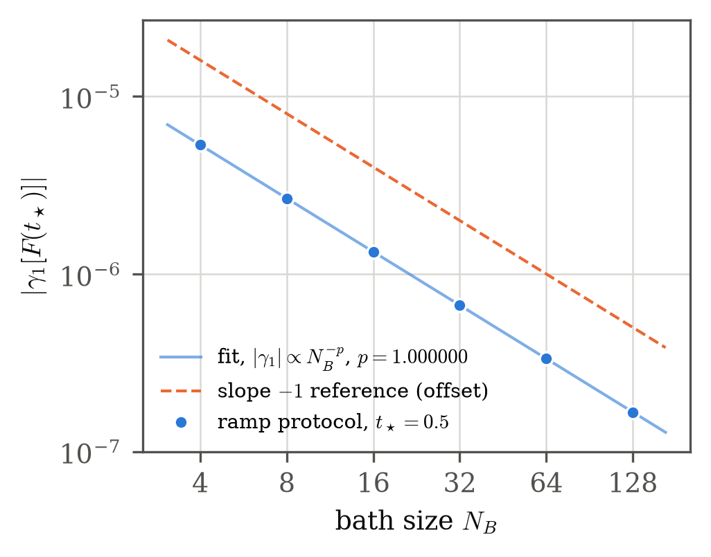
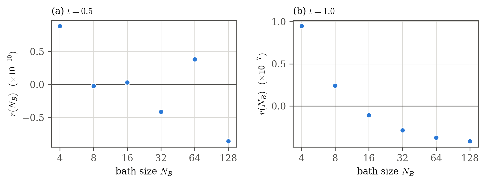

![Model, protocols and witness (schematic). (a) The clamped coordinate exerts the force q(t)/\sqrt{N_B} on each of N_B Duffing oscillators and receives the force F_q of (3). (b) The two protocols, drawn exactly from their definitions (5); the theorem concerns a short initial time window (0, \delta) whose size is existential and is not drawn to scale. (c) The witness logic: the reference protocol has zero third cumulant for every N_B; the ramp protocol has a non-zero third cumulant for all sufficiently large N_B; since the absolute standardised skewness is invariant under shared location, scale and sign modulation, the two cannot share one signed-affine exogenous representation. The panel contains no data.](../figures/fig1_schematic.png)
Working draft
Working draft — not for submission. AI-assisted; disclosure statements pending.
Reduced descriptions of open systems routinely replace an environment by deterministic memory plus an exogenous random force. For a harmonic bath with linear coupling this replacement is exact, so reduced data cannot distinguish a reacting environment from an externally supplied noise. We ask whether reciprocal back-reaction from a finite anharmonic environment can be distinguished from the broadest affine version of that replacement: one exogenous process, shared across a family of interventions, modulated by deterministic causal location and by a deterministic causal scale whose sign may change. For a bath of \(N_B\) Duffing oscillators coupled with strength \(N_B^{-1/2}\) to a clamped coordinate, we prove that the interventional force laws under a smooth ramp protocol and under the at-rest reference protocol admit no common representation of this kind for every sufficiently large finite \(N_B\). The witness is the standardised skewness at a single short time: it vanishes exactly for the reference protocol, while for the ramp the force’s third cumulant is \(K(t)/N_B + O(N_B^{-2})\) with \(K(t) = 3c(t)\) and \(c(t) = - \frac{\operatorname{Var}(x_0^2)}{28 \pi^{3}}\, t^7 + O(t^8) < 0\). The effect is mesoscopic: it decays as \(O(N_B^{-1})\), and in the reservoir limit the centred force laws of the fixed protocols converge to a common Gaussian law with the equilibrium covariance of the unforced bath. Deterministic finite-\(N_B\) quadrature illustrates the \(1/N_B\) scaling at fixed finite times that are not claimed to lie inside the theorem’s short-time window.
A standard route from microscopic dynamics to a reduced equation of motion eliminates the environment and keeps its effect as a memory kernel plus a random force [CITATION NEEDED: generalized Langevin equation from a harmonic bath with linear coupling (Zwanzig; Caldeira–Leggett)] [CITATION NEEDED: Mori–Zwanzig projection-operator formalism]. When the bath is harmonic and the coupling is linear in both the bath and system coordinates, the reduced path law is exactly that of a generalized Langevin equation driven by an exogenous force whose law does not depend on the system’s history. Reduced data then identify the effective forcing law but not whether the environment “reacts”: an exogenous noise with the right law and memory reproduces everything.
That indistinguishability depends on what is compared. For a single experimental protocol nothing can be distinguished at all: whatever force the environment exerts, an exogenous process with exactly that law, and no memory, reproduces the reduced path (Supplement S3). Any meaningful comparison must therefore fix one environment and probe it with a family of interventions, and ask whether one shared exogenous description serves the whole family.
We adopt that interventional setting. The system coordinate is clamped to prescribed trajectories, all starting from one common environment preparation, and the environment force needed to hold each trajectory is the observable. The competitor descriptions form a nested ladder (Section 3), from the harmonic class, through additive exogenous forcing with arbitrary deterministic causal memory and the shared signed-affine class \(\mathcal{E}_2^{\pm}\) (an arbitrary deterministic causal scale whose sign may change), up to an arbitrary causal transformation of one exogenous random object. The top class contains every classical deterministic causal environment of the type considered here (a finite-dimensional state, well posed on \([0, T]\); Supplement S3), so back-reaction as such can never be identified at that level. The informative question is whether back-reaction leaves the shared signed-affine class.
Our main result (Theorem 1) answers this for a concrete model: a finite bath of \(N_B\) Duffing oscillators coupled reciprocally, with strength \(N_B^{-1/2}\), to the clamped coordinate. For each fixed sufficiently small time, and every sufficiently large finite \(N_B\), the force law under a smooth ramp protocol has non-zero standardised skewness while the reference (at-rest) protocol has exactly zero third cumulant. Since the absolute standardised skewness is invariant under every deterministic location, scale and sign modulation, no shared signed-affine exogenous process can represent both. The leading coefficient is explicit, \(K(t) = 3c(t)\) with \(c(t) = - \frac{\operatorname{Var}(x_0^2)}{28 \pi^{3}}\, t^7 + O(t^8)\), and the witness decays as \(O(N_B^{-1})\); in the reservoir limit the centred force laws of the fixed protocols converge to one common Gaussian law (Section 5).
Contributions.
What is established and what is added. The table separates ingredients that are already known, which we credit, from what this work contributes.
Table 1: Established ingredients and the contribution of this work.
| Established ingredients | Contribution here |
|---|---|
| Harmonic baths with linear coupling give exact generalized Langevin equations with exogenous noise [CITATION NEEDED: generalized Langevin equation from a harmonic bath with linear coupling (Zwanzig; Caldeira–Leggett)] | The harmonic class placed at the bottom of a proved ladder of shared interventional classes (Supplement S3) |
| Anharmonic environments produce non-Gaussian forces; Gaussian or Markovian embeddings can fail [CITATION NEEDED: generalized Langevin equations with non-Gaussian orthogonal forces, Kiefer et al., arXiv:2505.15665 — full bibliographic details to be verified] | A protocol-dependent change of standardised force shape proved for one fixed environment across an intervention family (Theorem 1) |
| Influence-functional treatments organise anharmonic corrections around linear response [2] [3]; finite baths depart from ideal fluctuation–dissipation behaviour [4] | The finite-bath departure tied to a defined competitor class, with an explicit \(1/N_B\) rate and leading coefficient |
| Location-scale noise models with fixed standardised shape, and their causal identifiability [1] [CITATION NEEDED: location-scale / conditional-transformation regression literature] | A shared process across interventions with prefix-consistent signed scale, and a non-representability result rather than an identifiability result within the class |
| Identifiability of interventional stochastic differential equations [CITATION NEEDED: identifiability of interventional stochastic differential equations, Zweig et al., arXiv:2505.15987 — full bibliographic details to be verified] | A constructive Hamiltonian counterexample to shared signed-affine representation |
| Gaussian, linear-response reservoir recovery for weakly coupled environments [2] [3] [CITATION NEEDED: Caldeira–Leggett-type linear-response universality], via central-limit behaviour [CITATION NEEDED: multivariate Lindeberg–Feller central limit theorem, standard probability text] | The quantified \(O(1/N_B)\) disappearance of the \(\mathcal{E}_2^{\pm}\) witness into that known limit, stated for the fixed protocols at the level of finite-dimensional force laws |
A dictionary. The competitor class has a direct counterpart in causal modelling. At a single time and a fixed protocol history, the form (6) is the location-scale noise model \(Y = f(X) + g(X) N\) of [1], under the identification below. What has no static counterpart is the shared process across an intervention family, the prefix-consistent sign, and the common degeneracy set.
Table 2: Causal-modelling and physics vocabulary used in this paper.
| causal modelling | this paper |
|---|---|
| intervention | clamp protocol \(q \in \mathcal{X}\) applied to one fixed environment preparation |
| covariate \(X\) | protocol history \(q_{[0,t]}\) |
| response \(Y\) | interventional environment force \(F_q(t)\) |
| location function \(f(X)\) | deterministic causal response \(M_t[q]\) |
| scale function \(g(X)\) | signed causal scale \(G_t[q] \neq 0\) |
| noise \(N\), independent of \(X\) | shared exogenous process \(\xi\) with protocol-independent law |
| standardised residual | standardised force \(Z_q(t)\) |
| model membership | representability of the force family in \(\mathcal{E}_1\) or \(\mathcal{E}_2^{\pm}\) |
Outline. Section 2 defines model \(\mathcal{D}\) and the protocols, Section 3 the competitor classes, Section 4 states and explains Theorem 1, Section 5 the reservoir limit, Section 6 a deterministic numerical illustration, and Section 7 discusses scope and limitations. Supplement S1 contains the statements, the notation table and the proofs of Theorem 1 and its lemmas; S2 a small-time consistency check; S3 the proved class hierarchy and mechanism map; S4 the reservoir-limit proof; S5 the numerical methods, convergence and tables; S6 a second numerical code path and reproducibility.
Parent Hamiltonian. Model \(\mathcal{D}\) couples a system coordinate \(q\) (momentum \(p_q\), mass \(M\)) reciprocally to \(N_B\) identical Duffing oscillators: \[ H = \frac{p_q^2}{2M} + V(q) + \sum_{j=1}^{N_B} \left[ \frac{p_j^2}{2} + \frac{x_j^2}{2} + \frac{x_j^4}{4} \right] - \frac{1}{\sqrt{N_B}}\, q \sum_{j=1}^{N_B} x_j, \qquad V(q) = \frac{q^2}{2} + \frac{q^4}{4}. \tag{1} \] The coupling per oscillator is \(\varepsilon = N_B^{-1/2}\), so the equilibrium force fluctuation is of order one at every bath size while each oscillator is perturbed only at order \(\varepsilon\). The Hamiltonian is bounded below for every \(N_B\), and the single coupling term produces both the force on the bath and the force on the system: the coupling is reciprocal. The system potential \(V\) defines the autonomous parent model and plays no role once \(q\) is clamped.
Clamped dynamics and the force. Under a prescribed trajectory \(q(t)\) each oscillator obeys \[ \ddot x_j + x_j + x_j^3 = \frac{q(t)}{\sqrt{N_B}}, \tag{2} \] and the environment force on the clamped coordinate is \[ F_q(t) = -\frac{\partial H_{\mathrm{int}}}{\partial q} = \frac{1}{\sqrt{N_B}} \sum_{j=1}^{N_B} x_j(t). \tag{3} \] It is measured interventionally, as the force needed to hold the prescribed trajectory; no hidden bath variable is read.
Preparation. At \(q(0) = 0\) the coupling vanishes, and the oscillators are prepared independently in the single-oscillator Gibbs law at inverse temperature \(\beta = 1\), \[ \rho(x, p) \propto e^{-\beta H_0(x,p)}, \qquad H_0(x, p) = \frac{p^2}{2} + \frac{x^2}{2} + \frac{x^4}{4}, \qquad \beta = 1 . \tag{4} \] The preparation is the same for every protocol. We write \(m_2 = \langle x^2 \rangle_{\mathrm{Gibbs}}\) and \(m_4 = \langle x^4 \rangle_{\mathrm{Gibbs}}\); integration by parts gives \(m_2 + m_4 = 1\), hence \(\operatorname{Var}(x_0^2) = m_4 - m_2^2 = 1 - m_2 - m_2^2 > 0\). Outside Section 6 and Supplement S5, \(m_2\) is kept symbolic.
Protocols. Admissible clamps are \(C^2\) trajectories with \(q(0) = \dot q(0) = 0\) and bounded \(q, \dot q, \ddot q\) on \([0, 2\pi]\), all applied to the one preparation (4). Two are used: \[ q_{\mathrm{ref}}(t) \equiv 0, \qquad q_{\mathrm{ramp}}(t) = \begin{cases} s(t/\pi), & 0 \leq t \leq \pi, \\ 1, & \pi < t \leq 2\pi, \end{cases} \qquad s(u) = 10u^3 - 15u^4 + 6u^5 . \tag{5} \] The reference protocol holds the coordinate at rest; the ramp protocol moves it smoothly from \(0\) to \(1\) (Fig. 1). Theorem 1 uses only the polynomial part \(s(t/\pi)\) of the ramp, at short times.
Single-oscillator reduction. Under a clamp, all oscillators obey the same deterministic equation, driven by the same \(\varepsilon q(t)\), from independent identically distributed initial data. Hence \(F_q = \varepsilon \sum_j X_j\) with \(X_j\) independent copies of one driven-oscillator process \(X^{\varepsilon}_q\), exactly, for every finite \(N_B\) (Lemma 1 of Supplement S1). We write \(x_0(t)\) for the unforced trajectory (\(\varepsilon = 0\)) and \(y_1 = \partial_\varepsilon X^\varepsilon\rvert_{\varepsilon = 0}\) for the first-order response, which solves \(\ddot y_1 + (1 + 3x_0^2)\, y_1 = q(t)\) with \(y_1(0) = \dot y_1(0) = 0\).
Every competitor description below is one model shared by all admissible clamps: its objects may depend on the prescribed path up to the present, \(q_{[0,t]}\), but not on a protocol label. No Gaussian, Markov, finite-memory or stationarity restriction is imposed. Sharing is essential, because a separate exogenous process fitted to each protocol always succeeds (Supplement S3).
The nested ladder.
These classes form the ladder \[ \mathcal{H} \subset \mathcal{E}_1 \subsetneq \mathcal{E}_2^{\pm} \subsetneq \mathcal{E}_{\mathrm{univ}}, \tag{7} \] where, for the class \(\mathcal{H}\) of environments, “\(\subset\)” means that the interventional force family of every environment in \(\mathcal{H}\) lies in \(\mathcal{E}_1\), and both inclusions among the \(\mathcal{E}\)-classes are strict (Supplement S3). Every classical, deterministic, causal environment of the type considered here, reciprocal and energy-absorbing back-reaction included, lies in \(\mathcal{E}_{\mathrm{univ}}\); so does model \(\mathcal{D}\). Back-reaction as such is therefore never identifiable at the universal level, and the content of the question lies at the boundary between \(\mathcal{E}_2^{\pm}\) and \(\mathcal{E}_{\mathrm{univ}}\).
Operational form and prefix consistency. Write \(Z_q(t) = (F_q(t) - \mathbb{E} F_q(t))/\operatorname{sd} F_q(t)\) for the standardised force at times where the variance is non-zero, and \(D_q\) for the set of times where it vanishes. Under clamping, finite second moments and environment causality (the law of \(F_q\) on \([0, t]\) depends on \(q\) only through \(q_{[0,t]}\)), and at the level of finite-dimensional distributions, a force family lies in \(\mathcal{E}_2^{\pm}\) exactly when (i) \(D_q = D\) is common to all protocols, and (ii) there is one shared deterministic causal sign functional \(S_t : q_{[0,t]} \mapsto \{+1, -1\}\) such that, with \(s_q(t) = S_t[q_{[0,t]}]\), the finite-dimensional laws of \(s_q Z_q\) off \(D\) are the same for every protocol. Prefix consistency is part of membership: two protocols that agree up to time \(t\) must receive the same sign at \(t\).
The invariant used here. Within \(\mathcal{E}_2^{\pm}\), a clamped protocol gives \(F_q(t) = M_t[q] + G_t[q]\,\xi(t)\) with deterministic numbers \(M_t[q]\) and \(G_t[q] \neq 0\), so \[ \gamma_1[F_q(t)] = \operatorname{sgn}\!\left(G_t[q]\right)\, \gamma_1[\xi(t)], \qquad \gamma_1[Y] = \frac{\kappa_3(Y)}{\operatorname{Var}(Y)^{3/2}} . \tag{8} \] The absolute standardised skewness is therefore the same for every protocol at every non-degenerate time. A protocol pair with \(|\gamma_1|\) zero for one and non-zero for the other, at a time where both variances are positive, proves that no shared signed-affine representation exists. Sign changes alone never count as such a witness, and neither does a protocol-dependent zero of the variance.
Three exact facts reduce the question to a single-oscillator computation.
Cumulants scale exactly with bath size. Because \(F_q = \varepsilon \sum_j X_j\) with independent copies \(X_j\) of \(X^\varepsilon_q\), for every order \(n\) and every finite tuple of times \[ \kappa_n\!\left(F_q(t_1), \dots, F_q(t_n)\right) = N_B^{\,1 - n/2}\; \kappa_n\!\left(X^\varepsilon_q(t_1), \dots, X^\varepsilon_q(t_n)\right). \tag{9} \]
The reference skewness vanishes exactly. The unforced dynamics and the Gibbs law are invariant under \((x, p) \mapsto (-x, -p)\). Hence \(\kappa_3(F_{\mathrm{ref}}(t)) = 0\) for every \(t\) and every \(N_B\), while \(\operatorname{Var} F_{\mathrm{ref}}(t) = m_2 > 0\).
The ramp third cumulant has an explicit first-order coefficient. The same reflection combined with \(\varepsilon \mapsto -\varepsilon\) makes \(\kappa_3(X^\varepsilon(t))\) odd in \(\varepsilon\). Moment bounds from the energy estimate and Grönwall’s inequality justify differentiating under the expectation, and for each fixed \(t \in [0, 2\pi]\) \[ \kappa_3\!\left(F_{\mathrm{ramp}}(t)\right) = \frac{K(t)}{N_B} + O\!\left(N_B^{-2}\right), \qquad K(t) = 3c(t), \qquad c(t) = \operatorname{Cov}\!\left(x_0(t)^2,\, y_1(t)\right), \tag{10} \] with a remainder constant that depends on \(t\).
The small-time coefficient. The first non-vanishing Taylor coefficient of \(c(t)\) is that of \(t^7\): \[ c(t) = - \frac{\operatorname{Var}(x_0^2)}{28 \pi^{3}}\; t^7 + O(t^8), \qquad K(t) = 3c(t). \tag{11} \] The coefficient follows from an order-by-order solution of the equations for \(x_0\) and \(y_1\): the orders \(t^0\) to \(t^6\) vanish because the response starts at order \(t^5\) with deterministic leading coefficients, and at order \(t^7\) the Gibbs identity \(m_2 + m_4 = 1\) removes the remaining deterministic contribution, so that only the \(x_0^2\)-dependent part of the response survives (Supplement S1, Lemma 4). Since \(\operatorname{Var}(x_0^2) > 0\), \(c(t) < 0\) on some interval \((0, \delta)\).
Interpretation. The response \(y_1\) of an oscillator to the ramp is weaker when its instantaneous stiffness \(1 + 3x_0^2\) is larger, that is, when \(x_0^2\) is large. The response is therefore anticorrelated with \(x_0^2\), which is exactly what \(c(t) < 0\) expresses, and this anticorrelation skews the summed force. This reading is an interpretation of the sign of \(c(t)\), which is what is proved. Supplement S3 places each mechanism discussed in this paper in the class hierarchy.
Theorem 1 (finite-bath escape from the shared signed-affine class). Consider model \(\mathcal{D}\) with bath size \(N_B\), prepared in the Gibbs state at \(\beta = 1\), together with the reference protocol \(q_{\mathrm{ref}} \equiv 0\) and the ramp protocol \(q_{\mathrm{ramp}}\), which equals \(s(t/\pi)\) on \([0,\pi]\). There exists \(\delta \in (0, 1]\) such that, for each fixed \(t \in (0, \delta)\), there is a finite integer \(N_0(t)\) with the following property: for every bath size \(N_B \geq N_0(t)\), the interventional force laws of model \(\mathcal{D}\) under the reference and ramp protocols admit no common representation in the class \(\mathcal{E}_2^{\pm}\). Consequently, the interventional force family of model \(\mathcal{D}\) over \(\mathcal{X}\) lies outside \(\mathcal{E}_2^{\pm}\) for all finite \(N_B \geq N_0(t)\). The witness is the standardised skewness at the single time \(t\): \(\gamma_1[F_{\mathrm{ref}}(t)] = 0\) for every \(N_B\), whereas \(\gamma_1[F_{\mathrm{ramp}}(t)] < 0\) for every \(N_B \geq N_0(t)\), and both force variances are strictly positive. The numbers \(\delta\) and \(N_0(t)\) are existential: no value of either is claimed, and \(N_0(t)\) is not claimed to be uniform in \(t\).
Proof sketch. Fix \(t \in (0, \delta)\), so \(K(t) < 0\). By (10) there is a finite \(N_0(t)\) beyond which the remainder is smaller than \(|K(t)|/N_B\), so \(\kappa_3(F_{\mathrm{ramp}}(t)) < 0\). The ramp force variance is strictly positive, because the time-\(t\) flow map is a diffeomorphism carrying the Gibbs density to a density. Hence \(\gamma_1[F_{\mathrm{ramp}}(t)] < 0 = \gamma_1[F_{\mathrm{ref}}(t)]\) at a time where both variances are positive, which contradicts (8). Supplement S1 gives every step, including the remainder bounds and the definition \(N_0(t) = \lfloor \Theta(t)/|K(t)| \rfloor + 1\). \(\square\)
The statement is pointwise in \(t\): for each fixed short time there is a threshold. It is not a uniform statement over an interval, and neither \(\delta\) nor \(N_0(t)\) is computed. No time was selected numerically: the interval is forced by the sign of the first non-zero Taylor coefficient, and the protocols were fixed before any computation.
The escape of Theorem 1 is a finite-bath effect; the two statements of this section together form Proposition 1, proved in Supplement S4. (a) For fixed \(t \in (0, \delta)\), \(\kappa_3(F_{\mathrm{ramp}}(t)) = K(t)/N_B + O(N_B^{-2})\) and the ramp variance tends to \(m_2 > 0\), so \[ \gamma_1[F_{\mathrm{ramp}}(t)] = \frac{K(t)}{m_2^{3/2}\, N_B} + o(N_B^{-1}) \longrightarrow 0 \qquad (N_B \to \infty); \tag{12} \]
in particular \(|\gamma_1[F_{\mathrm{ramp}}(t)]| = O(N_B^{-1})\).
This is an \(\mathcal{E}_1\)-type reservoir limit in the following precise sense: for the fixed protocols, the centred finite-dimensional force laws converge to one common Gaussian law. It is not a statement that one shared \(\mathcal{E}_1\) representation exists uniformly over the whole infinite class of admissible clamps; the moment bounds depend on the clamp, and no such uniform theorem is claimed. Nor is it a statement that the environment enters the harmonic class \(\mathcal{H}\): the limit is reached at the level of finite-dimensional force laws, no harmonic-bath realisation of it is constructed, and the finite-\(N_B\) model remains anharmonic.
The theorem is analytic and does not use the numbers in this section. The computation below illustrates the finite-\(N_B\) behaviour at fixed finite times; it is evidence-grade, not certified, and it is not part of the proof. In particular, the primary time \(t_\star = 0.5\) and the diagnostic times \(0.25\), \(0.75\) and \(1.0\) were fixed in advance, and none of them is claimed to lie inside the theorem’s window \((0, \delta)\).
Method. By the single-oscillator reduction, every \(N_B\) requires only the one-oscillator process \(X^\varepsilon\) at \(\varepsilon = N_B^{-1/2}\), and the force cumulants follow exactly from (9). Gibbs expectations over the initial data are evaluated by deterministic tensor quadrature, with every initial condition evolved separately by a fixed-step fourth-order Runge–Kutta integrator; no sampling is involved. The bath sizes are \(N_B \in \{4, 8, 16, 32, 64, 128\}\). Supplement S5 gives the method, the controls, the archived resolution ladder and the full tables; Supplement S6 reports a reproducibility cross-check by a separately written code.
Controls. The reference protocol is stationary on the grid: its variance stays at \(0.4679199170\) with maximal drift \(1.2\times 10^{-8}\) over the sampled times, and its mean and third cumulant remain below \(5.6\times 10^{-17}\) and \(7.8\times 10^{-17}\) in magnitude. The initial variance agrees with an independent one-dimensional quadrature of the Gibbs marginal, \(m_2 = 0.4679199170\), to relative discrepancy \(2.4\times 10^{-16}\), and our own high-precision evaluation gives \(m_2 = 0.467919916974\) and \(\operatorname{Var}(x_0^2) = 0.313131034326\), inside the certified enclosure recorded with the proof. The exact identity \(m_2 + m_4 = 1\) holds on the grid to \(6.7\times 10^{-16}\).
Results. At \(t_\star = 0.5\) the ramp protocol has negative standardised skewness at every bath size, \(\gamma_1 = -5.338\times 10^{-6}\) at \(N_B = 4\) and \(-1.668\times 10^{-7}\) at \(N_B = 128\) (Table 3, Fig. 2). A least-squares fit of \(\log|\gamma_1|\) against \(\log N_B\) over all six bath sizes gives exponent \(p = 1.000000\), with local exponents between \(0.9999999999\) and \(1.0000000002\); across the archived resolution ladder (Supplement S5), \(\gamma_1\) at \(t_\star\) is unchanged to the printed precision. The product \(N_B \gamma_1\) is flat across the grid to relative spread \(1.7\times 10^{-10}\), so no finite-\(N_B\) correction is resolved at \(t_\star\). At the latest diagnostic time \(1.0\) a monotone correction is resolved: \(N_B \gamma_1\) drifts by a relative \(1.4\times 10^{-7}\) between the smallest and largest bath sizes (Fig. 3). All four times show negative skewness and the same \(1/N_B\) scaling (Supplement S5).
Table 3: Ramp-protocol standardised skewness at \(t_\star = 0.5\), generated from the authoritative numerical output. The product \(N_B\gamma_1\) is constant to the printed precision; its relative spread over the grid is \(1.7\times 10^{-10}\).
| \(N_B\) | \(\gamma_1[F(t_\star)]\) | \(N_B\,\gamma_1[F(t_\star)]\) |
|---|---|---|
| 4 | \(-5.33829\times 10^{-6}\) | \(-2.135314\times 10^{-5}\) |
| 8 | \(-2.66914\times 10^{-6}\) | \(-2.135314\times 10^{-5}\) |
| 16 | \(-1.33457\times 10^{-6}\) | \(-2.135314\times 10^{-5}\) |
| 32 | \(-6.67286\times 10^{-7}\) | \(-2.135314\times 10^{-5}\) |
| 64 | \(-3.33643\times 10^{-7}\) | \(-2.135314\times 10^{-5}\) |
| 128 | \(-1.66821\times 10^{-7}\) | \(-2.135314\times 10^{-5}\) |
Cross-checks (non-evidentiary). A separately written implementation (Supplement S6, a reproducibility cross-check rather than additional evidence) agrees with the authoritative values to within \(1.4\times 10^{-7}\) in relative terms at \(t_\star\) and at \(t = 1.0\), for all bath sizes. As a consistency note: the first-order expansion (10) (Lemma 3), which holds at every fixed \(t \in [0, 2\pi]\) and not only in the theorem’s window, together with \(\operatorname{Var} F_{\mathrm{ramp}}(t) \to m_2\), gives \(N_B\gamma_1 \to K(t)/m_2^{3/2}\) at each fixed time; evaluating \(K(t_\star)\) with the separately written small-time code of Supplement S2 gives \(-2.13531\times 10^{-5}\) for that limit, against \(N_B\gamma_1 = -2.13531\times 10^{-5}\) at \(N_B = 128\), a relative difference of \(1.3\times 10^{-7}\), within the \(1\times 10^{-6}\) relative spread of the small-time code’s own runs.


What is shown. A finite reciprocal anharmonic environment can produce interventional force laws that no single shared causal signed-affine modulation of one exogenous process represents. For model \(\mathcal{D}\) this holds for each fixed short time and every sufficiently large finite bath size, with a standardised third-cumulant witness whose leading coefficient is explicit and negative. The distinguishing contribution is mesoscopic: it scales as \(1/N_B\) and vanishes in the reservoir limit, where the centred force laws of the fixed protocols return to one common Gaussian law with the equilibrium covariance \(C_0\) of the unforced bath. The witness therefore decays at a known rate as the bath grows, while the centred force laws of the fixed protocols converge to one common Gaussian law with covariance \(C_0\). Whether that limit admits an effective harmonic-bath description is not addressed here; it connects to the influence-functional literature [2] [3].
What is not shown. The result is relative to \(\mathcal{E}_2^{\pm}\). It makes no claim against the universal class \(\mathcal{E}_{\mathrm{univ}}\), which contains model \(\mathcal{D}\): back-reaction in a classical deterministic causal environment of the type considered here (a finite-dimensional state, well posed on \([0, T]\); Proposition S3.7) is always representable as a causal transformation of one fixed exogenous random object. It does not identify randomness of any special origin or a unique microscopic description of the environment. The constants \(\delta\) and \(N_0(t)\) are existential; no finite-\(N_B\) detection threshold and no experimentally observable effect size are claimed. The numerical times are not certified to lie inside the theorem’s window. No uniform statement over the full clamp class is made in the reservoir limit, and quantum environments are not treated.
Relation to known results. The harmonic class \(\mathcal{H}\) lies in \(\mathcal{E}_1\), and a harmonic bath coupled through \(A(q) = q + q^3/3\), whose factor \(A'(q) = 1 + q^2\) never vanishes, still lies exactly in \(\mathcal{E}_2^{\pm}\) (Proposition S3.8): history-dependent noise amplitude from a non-vanishing deterministic causal factor is ordinary multiplicative response and is not the effect reported here. The invariance of standardised shape under location-scale maps is standard in statistics [CITATION NEEDED: location-scale / conditional-transformation regression literature], and the causal location-scale noise model of [1] has the same functional form as a single-time slice of (6). Their identifiability theorem, however, assumes that the model holds in one causal direction and identifies that direction; the present theorem is a non-representability result for a shared process across an intervention family, constructed from Hamiltonian dynamics. Non-Gaussian corrections from anharmonic environments [2] [3] [CITATION NEEDED: generalized Langevin equations with non-Gaussian orthogonal forces, Kiefer et al., arXiv:2505.15665 — full bibliographic details to be verified] and finite-bath departures from ideal fluctuation–dissipation behaviour [4] are known; what is new here is their role as a quantified escape from a defined shared competitor class.
Limitations of the present draft. The proofs were reproduced by an independent internal re-derivation, not by external review. The literature comparison is a targeted search, not an exhaustive one, and several citations below are placeholders. A certified-error evaluation of the third-cumulant coefficients at finite times, which would turn the numerical illustration into a certified statement at those times, has not been carried out.
[AI-USE DISCLOSURE — manuscript preparation]
[DATA/CODE AVAILABILITY — to be completed by the author: repository location, commit, and licence for the numerical output, the build scripts and the build manifest.]
[1] A. Immer, C. Utans, I. Khemakhem, B. Schölkopf, “On the Identifiability and Estimation of Causal Location-Scale Noise Models,” ICML 2023 (PMLR 202); arXiv:2210.09054. [Author list as recorded in the verification record — to be verified against the primary source during the literature sweep.]
[2] N. Makri, “The Linear Response Approximation and Its Lowest Order Corrections: An Influence Functional Approach,” J. Phys. Chem. B 103, 2823 (1999). doi:10.1021/jp9847540.
[3] N. Makri, “Parsing the Influence Functional: Harmonic Bath Mapping and Anharmonic Small Matrix Path Integral,” J. Phys. Chem. Lett. 15, 4616 (2024). doi:10.1021/acs.jpclett.4c00908.
[4] A. Carcaterra, A. Akay, “Fluctuation-dissipation and energy properties of a finite bath,” Phys. Rev. E 93, 032142 (2016). doi:10.1103/PhysRevE.93.032142.
The four references above reproduce the verification record’s citation data; they are to be re-verified during the literature sweep. All other citations in this draft are visible placeholders marked CITATION NEEDED; the literature sweep has not been done.
The supplement contains: S1, the theorem and notation sheet with complete proofs; S2, a small-time consistency check of the leading coefficient; S3, the proved class hierarchy and mechanism map; S4, the reservoir-limit proof; S5, the numerical methods, convergence and tables for Section 6; S6, a second numerical code path and reproducibility. Equations are numbered within each supplement section.
This supplement states the main result and every lemma it uses, defines each symbol exactly once, and gives complete proofs of Theorem 1 and of its lemmas, written to be worked through line by line; Proposition 1 is proved in Supplement S4, and the class-hierarchy propositions in Supplement S3. Every load-bearing definition, equation and statement carries an entry in the build manifest that traces it to the proof record (file, commit, section). Throughout this supplement \(m_2\) is kept symbolic; its numerical value appears only in Section 6 and Supplement S5.
How to read the proof. The argument has one idea and four supporting facts. The idea: a shared signed-affine modulation of one exogenous process cannot change the absolute standardised skewness of the force, so if one protocol has zero skewness and another has non-zero skewness, no such shared representation exists. The four facts are: (i) an exact identity that turns cumulants of the bath force into cumulants of a single oscillator (Lemma 1); (ii) a symmetry that makes the reference protocol’s skewness vanish exactly (Lemma 2); (iii) a first-order expansion of the ramp protocol’s third cumulant in \(1/N_B\) with a controlled remainder (Lemma 3); and (iv) a small-time computation showing that the first-order coefficient is strictly negative (Lemma 4). Lemma 5 makes sure the standardisation is legitimate, and Lemma 6 is the precise form of the idea.
| Symbol | Meaning |
|---|---|
| \(\mathcal{D}\) | the model of Definition 1 (finite Duffing bath, reciprocal coupling) |
| \(t\), \(T\) | time; the horizon is \([0, T]\) with \(T = 2\pi\) |
| \(M\), \(p_q\), \(V\) | mass, momentum and potential of the system coordinate; \(M\) denotes the mass only in (S1.1), and the location functional \(M_t[q]\) everywhere else |
| \(H\), \(H_{\mathrm{int}}\) | parent Hamiltonian (S1.1) and its coupling term, \(H_{\mathrm{int}} = -N_B^{-1/2}\, q \sum_j x_j\) |
| \(q(t)\) | prescribed (clamped) trajectory of the system coordinate; a protocol |
| \(\mathcal{X}\) | class of admissible clamps (Definition 2) |
| \(q_{\mathrm{ref}}\), \(q_{\mathrm{ramp}}\) | reference protocol and ramp protocol (Definition 2) |
| \(s(u)\) | smooth ramp polynomial used by \(q_{\mathrm{ramp}}\) |
| \(N_B\) | number of bath oscillators (bath size) |
| \(\varepsilon\) | coupling per oscillator, \(\varepsilon = N_B^{-1/2}\) |
| \(x_j, p_j\) | position and momentum of bath oscillator \(j \in \{1, \dots, N_B\}\) |
| \(H_0(x,p)\) | single-oscillator energy, (S1.4) |
| \(\beta\) | inverse temperature; \(\beta = 1\) throughout |
| \(\rho\) | single-oscillator Gibbs law at \(\beta = 1\), (S1.5) |
| \(z_0 = (a, b)\) | initial position and momentum of one oscillator, drawn from \(\rho\) |
| \(E_0\) | initial energy \(H_0(z_0)\) |
| \(X^{\varepsilon}_q(t)\) | position at time \(t\) of one oscillator driven by \(\varepsilon q\) |
| \(x_0(t)\) | unforced trajectory, \(X^{0}_q(t)\) (it does not depend on \(q\)); not an oscillator label |
| \(y_1(t)\) | first-order response \(\partial_\varepsilon X^\varepsilon_q(t)\rvert_{\varepsilon = 0}\) for the ramp protocol |
| \(F_q(t)\) | interventional environment force under protocol \(q\), (S1.3) |
| \(\mathring F_q(t)\), \(Z_q(t)\) | centred and standardised force (Definition 3) |
| \(m_k\) | Gibbs moment \(\mathbb{E}[a^k]\) of the initial position |
| \(\operatorname{Var}(x_0^2)\) | \(m_4 - m_2^2\), the variance of \(a^2\) (equal to that of \(x_0(t)^2\) for every \(t\)) |
| \(\kappa_n\) | joint cumulant of order \(n\); \(\kappa_2\) is the (co)variance |
| \(\gamma_1[Y]\) | standardised skewness \(\kappa_3(Y) / \operatorname{Var}(Y)^{3/2}\) |
| \(c(t)\) | \(\operatorname{Cov}(x_0(t)^2, y_1(t))\), (S1.8) |
| \(K(t)\) | \(3c(t)\), the first-order coefficient of the third cumulant |
| \(c_k\) | Taylor coefficient of \(t^k\) in \(c(t)\) |
| \(\alpha_k\), \(\eta_k\) | Taylor coefficients of \(t^k\) in \(x_0(t)\) and \(y_1(t)\) |
| \(\Lambda\) | constant in the order-eight Taylor remainder of \(c(t)\) |
| \(\Theta(t)\) | constant in the order-three remainder of the third cumulant in \(\varepsilon\) |
| \(Q\), \(c_Q\) | bound for a clamp, \(|q| \leq Q\), and the energy constant \(c_Q = \sqrt{2}\, Q \pi\) (Lemma 3) |
| \(R_N(t)\) | remainder in the first-order expansion (S1.11) |
| \(D_8(z_0)\) | bound on the eighth time derivative in the proof of Lemma 4 |
| \(\delta\), \(N_0(t)\) | existential time window and bath-size threshold of Theorem 1 |
| \(\mathcal{H}\) | harmonic baths with coupling linear in bath and system coordinates (Definition 4) |
| \(\mathcal{E}_1\), \(\mathcal{E}_2^{\pm}\), \(\mathcal{E}_{\mathrm{univ}}\) | competitor classes (Definition 4) |
| \(M_t[q]\), \(G_t[q]\), \(\xi\) | deterministic location, signed scale, shared exogenous process |
| \(s_q(t)\) | sign assigned to protocol \(q\) at time \(t\) by the shared sign functional \(S_t\) |
| \(U\), \(\mathfrak{F}\) | exogenous random object and causal functional of \(\mathcal{E}_{\mathrm{univ}}\) (Definition 4) |
| \(Y\), \(B\), \(C\), \(\Psi\) | state, drift, force map and initial-state map of a deterministic causal environment (Definition 4) |
| \(p_0\) | initial momentum coordinate, \(p_0 = b\); also written \(\dot x_0(0)\) |
| \(S_t\) | shared causal sign functional (Definition 4) |
| \(D_q\) | degeneracy set \(\{t : \operatorname{Var} F_q(t) = 0\}\) |
| \(C_0(t_a, t_b)\) | reservoir-limit covariance \(\langle x_0(t_a)\, x_0(t_b) \rangle_{\mathrm{Gibbs}}\), (S1.13) |
Definition 1 (model \(\mathcal{D}\)). A system coordinate \(q\) with momentum \(p_q\) and mass \(M\) is coupled reciprocally to \(N_B\) identical Duffing oscillators, \[ H = \frac{p_q^2}{2M} + V(q) + \sum_{j=1}^{N_B} \left[ \frac{p_j^2}{2} + \frac{x_j^2}{2} + \frac{x_j^4}{4} \right] - \frac{1}{\sqrt{N_B}}\, q \sum_{j=1}^{N_B} x_j, \qquad V(q) = \frac{q^2}{2} + \frac{q^4}{4}. \tag{S1.1} \] The system potential \(V\) only defines the autonomous parent model; it plays no role once \(q\) is clamped. Under a clamp the oscillators obey \[ \ddot x_j + x_j + x_j^3 = \varepsilon\, q(t), \qquad \varepsilon = N_B^{-1/2}, \tag{S1.2} \] and the environment force on the clamped coordinate is \[ F_q(t) = -\frac{\partial H_{\mathrm{int}}}{\partial q} = \frac{1}{\sqrt{N_B}} \sum_{j=1}^{N_B} x_j(t). \tag{S1.3} \] The single coupling term produces both the force on the bath (\(+\varepsilon q\) per oscillator) and the force on the system, so the coupling is reciprocal. With \[ H_0(x, p) = \frac{p^2}{2} + \frac{x^2}{2} + \frac{x^4}{4}, \tag{S1.4} \] the preparation is the same for every protocol: at \(q(0) = 0\) the coupling vanishes, and the pairs \((x_j(0), p_j(0))\) are independent and identically distributed with law \[ \rho(x, p) \propto e^{-\beta H_0(x, p)}, \qquad \beta = 1. \tag{S1.5} \]
Definition 2 (clamps and protocols). The admissible clamps \(\mathcal{X}\) are the prescribed trajectories \(q : [0, T] \to \mathbb{R}\) that are \(C^2\), satisfy \(q(0) = \dot q(0) = 0\), have bounded \(q\), \(\dot q\), \(\ddot q\), and are applied to the one fixed preparation (S1.5). Two members of \(\mathcal{X}\) are used: \[ q_{\mathrm{ref}}(t) \equiv 0, \qquad q_{\mathrm{ramp}}(t) = \begin{cases} s(t/\pi), & 0 \leq t \leq \pi, \\ 1, & \pi < t \leq 2\pi, \end{cases} \qquad s(u) = 10u^3 - 15u^4 + 6u^5 . \tag{S1.6} \] Only the restriction of \(q_{\mathrm{ramp}}\) to \([0, \pi]\), where it is the polynomial \(s(t/\pi)\), enters Theorem 1; the plateau is part of the protocol’s definition and enters only the statements on \([0, 2\pi]\) (Lemmas 3 and 5 and Proposition 1), not Theorem 1 or the numerical illustration, whose times all lie in \([0, \pi]\).
Definition 3 (centred and standardised force; degeneracy set). For a protocol \(q\) and a time \(t\), \(\mathring F_q(t) = F_q(t) - \mathbb{E} F_q(t)\). The degeneracy set is \(D_q = \{ t : \operatorname{Var} F_q(t) = 0 \}\), and for \(t \notin D_q\) the standardised force is \(Z_q(t) = \mathring F_q(t) / \operatorname{sd} F_q(t)\).
Definition 4 (competitor classes). Every class below is a single model shared by all protocols in \(\mathcal{X}\): its objects may depend on the prescribed path up to the current time, \(q_{[0,t]}\), but not on a protocol label, and no Gaussian, Markov, finite-memory or stationarity restriction is imposed.
The harmonic class \(\mathcal{H}\) (harmonic baths coupled linearly in the bath and system coordinates, with counterterm and a free-force law independent of the system’s initial state) sits at the bottom, and the ladder \(\mathcal{H} \subset \mathcal{E}_1 \subsetneq \mathcal{E}_2^{\pm} \subsetneq \mathcal{E}_{\mathrm{univ}}\) holds, with both inclusions among the \(\mathcal{E}\)-classes strict (Supplement S3). Every classical, deterministic, causal environment whose state obeys \(\dot Y = B(Y, q)\) with force \(C(Y, q)\) and initial state \(\Psi(q(0), U)\) — with \(B\) jointly continuous and locally Lipschitz in \(Y\), locally uniformly in \(q\), \(C\) measurable, and no blow-up on \([0, T]\) — lies in \(\mathcal{E}_{\mathrm{univ}}\) (Proposition S3.7); model \(\mathcal{D}\) is of this type (Lemma 3(i)). The question is therefore whether it lies in \(\mathcal{E}_2^{\pm}\).
Definition 5 (response objects). Write \(X^{\varepsilon}_q(t)\) for the position of one oscillator obeying (S1.2) from \(z_0 = (a, b) \sim \rho\), and \(x_0(t) = X^{0}_q(t)\) for the unforced trajectory. For the ramp protocol the first-order response \(y_1 = \partial_\varepsilon X^\varepsilon\rvert_{\varepsilon=0}\) solves \[ \ddot y_1 + \left(1 + 3 x_0^2\right) y_1 = q_{\mathrm{ramp}}(t), \qquad y_1(0) = \dot y_1(0) = 0, \tag{S1.7} \] and we set \[ c(t) = \operatorname{Cov}\!\left(x_0(t)^2,\, y_1(t)\right) = \mathbb{E}\!\left[\left(x_0(t)^2 - m_2\right) y_1(t)\right], \qquad K(t) = 3\, c(t). \tag{S1.8} \] The second form of \(c(t)\) uses \(\mathbb{E}\, x_0(t)^2 = m_2\) for every \(t\), which holds because the Gibbs law is invariant under the unforced flow.
Gibbs moments. Integration by parts against \(e^{-a^2/2 - a^4/4}\) (the boundary terms vanish) gives \[ m_{k+1} + m_{k+3} = k\, m_{k-1}, \qquad \text{in particular} \qquad m_2 + m_4 = 1, \quad \operatorname{Var}(x_0^2) = m_4 - m_2^2 = 1 - m_2 - m_2^2 . \tag{S1.9} \] Odd moments vanish by symmetry, and the momentum \(b\) is standard normal and independent of \(a\).
Theorem 1 (finite-bath escape from the shared signed-affine class). Consider model \(\mathcal{D}\) with bath size \(N_B\), prepared in the Gibbs state at \(\beta = 1\), together with the reference protocol \(q_{\mathrm{ref}} \equiv 0\) and the ramp protocol \(q_{\mathrm{ramp}}\), which equals \(s(t/\pi)\) on \([0,\pi]\). There exists \(\delta \in (0, 1]\) such that, for each fixed \(t \in (0, \delta)\), there is a finite integer \(N_0(t)\) with the following property: for every bath size \(N_B \geq N_0(t)\), the interventional force laws of model \(\mathcal{D}\) under the reference and ramp protocols admit no common representation in the class \(\mathcal{E}_2^{\pm}\). Consequently, the interventional force family of model \(\mathcal{D}\) over \(\mathcal{X}\) lies outside \(\mathcal{E}_2^{\pm}\) for all finite \(N_B \geq N_0(t)\). The witness is the standardised skewness at the single time \(t\): \(\gamma_1[F_{\mathrm{ref}}(t)] = 0\) for every \(N_B\), whereas \(\gamma_1[F_{\mathrm{ramp}}(t)] < 0\) for every \(N_B \geq N_0(t)\), and both force variances are strictly positive. The numbers \(\delta\) and \(N_0(t)\) are existential: no value of either is claimed, and \(N_0(t)\) is not claimed to be uniform in \(t\).
Lemma 1 (exact cumulant identity). Under any clamp \(q\) and for every finite \(N_B\), \(F_q = \varepsilon \sum_{j} X_j\) with \(X_1, \dots, X_{N_B}\) independent copies of the process \(X^{\varepsilon}_q\). Consequently, for every order \(n\) and every finite tuple of times, \[ \kappa_n\!\left(F_q(t_1), \dots, F_q(t_n)\right) = N_B^{\,1 - n/2}\; \kappa_n\!\left(X^\varepsilon_q(t_1), \dots, X^\varepsilon_q(t_n)\right). \tag{S1.10} \]
Lemma 2 (reference parity). Under the reference protocol, \(\kappa_3(F_{\mathrm{ref}}(t)) = 0\) exactly for every \(t\) and every \(N_B\), and \(\operatorname{Var} F_{\mathrm{ref}}(t) = m_2 > 0\).
Lemma 3 (first-order third cumulant). Let \(q = q_{\mathrm{ramp}}\), so that \(|q| \leq 1\) on \([0, 2\pi]\), and let \(|\varepsilon| \leq 1\). Then (i) for each \(z_0\) the clamped solution exists on \([0, 2\pi]\) and is \(C^\infty\) in \((z_0, \varepsilon)\); (ii) \(y_1\) solves (S1.7); (iii) every moment \(\mathbb{E}\big[\prod_{i \leq 3} \partial_\varepsilon^{k_i} X^\varepsilon(t_i)\big]\) with \(t_i \in [0, 2\pi]\) and \(\sum_i k_i \leq 3\) is finite, uniformly in \(|\varepsilon| \leq 1\), and differentiation in \(\varepsilon\) commutes with \(\mathbb{E}\) up to third order; (iv) \(\kappa_3(X^\varepsilon(t))\) is an odd \(C^3\) function of \(\varepsilon\) with derivative \(K(t)\) at \(\varepsilon = 0\). Hence for each fixed \(t \in [0, 2\pi]\) there is \(\Theta(t) < \infty\) with \[ \kappa_3\!\left(F_{\mathrm{ramp}}(t)\right) = \frac{K(t)}{N_B} + R_N(t), \qquad |R_N(t)| \leq \Theta(t)\, N_B^{-2} . \tag{S1.11} \] Parts (i) and (iii), and their proofs, hold verbatim for any clamp with \(|q| \leq Q\) on \([0, 2\pi]\), with constants depending on \(Q\) and on the bounds for the derivatives of \(q\); parts (ii) and (iv) are statements about the ramp protocol’s response \(y_1\) and its coefficient \(K(t)\).
Lemma 4 (small-time sign). The Taylor coefficients of \(c(t)\) satisfy \(c_0 = c_1 = \dots = c_6 = 0\) and \[ c(t) = - \frac{\operatorname{Var}(x_0^2)}{28 \pi^{3}}\; t^7 + O(t^8), \qquad\text{more precisely}\quad \left| c(t) - c_7 t^7 \right| \leq \Lambda\, t^8 \ \text{ on } [0, 1], \quad c_7 = - \frac{\operatorname{Var}(x_0^2)}{28 \pi^{3}} . \tag{S1.12} \] Since \(\operatorname{Var}(x_0^2) > 0\), \(c_7 < 0\), and there exists \(\delta \in (0, 1]\) such that \(c(t) < 0\), hence \(K(t) = 3c(t) < 0\), for every \(0 < t < \delta\).
Lemma 5 (positive variances). For every \(N_B\) and every \(t \in [0, 2\pi]\), \(\operatorname{Var} F_{\mathrm{ramp}}(t) = \operatorname{Var} X^\varepsilon(t)\) is finite and strictly positive.
Lemma 6 (an invariant of \(\mathcal{E}_2^{\pm}\)). If a force family lies in \(\mathcal{E}_2^{\pm}\) and \(\mathbb{E}\,|F_q(t)|^3 < \infty\) for one protocol (hence, by the shared representation, for every protocol), then at every time \(t\) outside the common degeneracy set the absolute standardised skewness \(|\gamma_1[F_q(t)]|\) takes the same value for every protocol \(q\).
Proposition 1 (reservoir limit; \(\mathcal{E}_1\)-type, finite-dimensional). (a) For each fixed \(t \in (0, \delta)\), \(|\gamma_1[F_{\mathrm{ramp}}(t)]| = O(N_B^{-1})\) and tends to zero as \(N_B \to \infty\). (b) For the reference and ramp protocols, and for any separately fixed admissible bounded clamp for which the moment estimates of Lemma 3 hold, and for each finite tuple of times in \([0, 2\pi]\), the centred force \(\mathring F_{q}\) converges in finite-dimensional distribution, as \(N_B \to \infty\), to the centred Gaussian law with covariance \[ C_0(t_a, t_b) = \left\langle x_0(t_a)\, x_0(t_b) \right\rangle_{\mathrm{Gibbs}}, \tag{S1.13} \] which is the same for every such protocol. No statement is made that one shared \(\mathcal{E}_1\) representation holds uniformly over the whole infinite clamp class \(\mathcal{X}\).
Step 1 (independence). Under a clamp, every oscillator obeys the same deterministic equation (S1.2), driven by the same prescribed \(\varepsilon q(t)\), from independent and identically distributed initial data. The solution map \(z_0 \mapsto X^\varepsilon_q(t; z_0)\) is deterministic, so the trajectories are independent copies of one process, and \(F_q = \varepsilon \sum_j X_j\) exactly. No approximation is involved.
Step 2 (cumulant generating function). For the vector \((F_q(t_1), \dots, F_q(t_n))\), independence gives \(\log \mathbb{E}\exp\big(\sum_a \theta_a F_q(t_a)\big) = N_B \log \mathbb{E} \exp\big(\varepsilon \sum_a \theta_a X(t_a)\big)\). Differentiating \(n\) times in \(\theta\) at zero brings down \(\varepsilon^n\), so \(\kappa_n(F) = N_B \varepsilon^n \kappa_n(X) = N_B^{1 - n/2} \kappa_n(X)\). \(\square\)
Why it matters. For \(n = 2\) the force variance equals the single-oscillator variance, so the force fluctuation is of order one at every bath size; for \(n = 3\) the force cumulant is \(N_B^{-1/2}\) times the single-oscillator cumulant. Everything below is about one oscillator.
The unforced vector field \((\dot x, \dot p) = (p, -x - x^3)\) is odd, so \((x, p) \mapsto (-x, -p)\) maps solutions to solutions, and \(\rho\) is even. Hence \(x_0(t)\) has a law symmetric about zero at every \(t\), \(\mathbb{E}\, x_0(t) = 0\), and \(\kappa_3(x_0(t)) = 0\). By Lemma 1, \(\kappa_3(F_{\mathrm{ref}}(t)) = N_B^{-1/2} \cdot 0 = 0\). The Gibbs law is invariant under the Hamiltonian flow, so \(\operatorname{Var} F_{\mathrm{ref}}(t) = \operatorname{Var} x_0(t) = m_2\), and \(m_2 > 0\) because \(a^2 \geq 0\) is not almost surely zero. \(\square\)
Step 1 (energy bound and global existence). Along the forced flow \(\mathrm{d}H_0/\mathrm{d}t = \varepsilon q p\), so \(\mathrm{d}\sqrt{H_0}/\mathrm{d}t = \varepsilon q p / (2\sqrt{H_0}) \leq |\varepsilon| Q / \sqrt{2}\). Hence \(\sqrt{H_0(t)} \leq \sqrt{E_0} + c_Q\) on \([0, 2\pi]\) with \(c_Q = \sqrt{2}\, Q \pi\). Orbits stay in a compact set, so solutions are global on \([0, 2\pi]\), and because the vector field is polynomial in \((z, \varepsilon)\) the flow is \(C^\infty\) in \((z_0, \varepsilon)\). This is (i).
Step 2 (variational equation). Differentiating (S1.2) in \(\varepsilon\) at \(\varepsilon = 0\) gives (S1.7). The initial data do not depend on \(\varepsilon\), because the preparation precedes the protocol and the coupling vanishes at \(t = 0\); hence \(y_1(0) = \dot y_1(0) = 0\). This is (ii).
Step 3 (moment bounds). Let \(w_k = \partial_\varepsilon^k z\). Each \(w_k\) solves a linear equation \(\dot w_k = A(t) w_k + f_k\) from zero, with \(A = \begin{pmatrix} 0 & 1 \\ -1 - 3x^2 & 0 \end{pmatrix}\), \(f_1 = (0, q)\), and, for \(k = 2, 3\), inhomogeneities \(f_k\) that are polynomials in \(x\) and the lower-order \(w_j^{x}\) obtained by differentiating \(-x^3\) (for example \(f_2 = (0, -6x (w_1^{x})^2)\)). Since \(x^4/4 \leq H_0\), \(x^2 \leq 2\sqrt{H_0} \leq 2(\sqrt{E_0} + c_Q)\), so \(\|A(t)\|\) and \(|x|\) are bounded by a constant of the form \(\mathrm{const} \cdot (1 + \sqrt{E_0})\). Grönwall’s inequality on \([0, 2\pi]\) then bounds every \(|w_k|\), \(k \leq 3\), and \(|X^\varepsilon|\) by \(P(E_0)\, e^{\lambda \sqrt{E_0}}\) for a polynomial \(P\) and a constant \(\lambda\), uniformly in \(|\varepsilon| \leq 1\).
Step 4 (integrability). Under \(\rho\), \(E_0 = H_0(z_0)\) and \(e^{-E_0 + \lambda\sqrt{E_0}} \leq e^{\lambda^2/2} e^{-E_0/2}\); the phase-space area of \(\{H_0 \leq e\}\) grows polynomially in \(e\). So \(\mathbb{E}[P(E_0) e^{\lambda \sqrt{E_0}}] < \infty\), and dominated convergence allows differentiating under \(\mathbb{E}\) up to third order, with continuous derivatives. This is (iii).
Step 5 (oddness). The map \((x, p, \varepsilon) \mapsto (-x, -p, -\varepsilon)\) maps solutions to solutions and \(\rho\) is even, so \((X^{-\varepsilon}(t))_t\) has the law of \((-X^{\varepsilon}(t))_t\). Hence \(\kappa_3(X^{-\varepsilon}) = -\kappa_3(X^\varepsilon)\): the third cumulant is odd in \(\varepsilon\), vanishes at \(\varepsilon = 0\), and \(\mathbb{E}\, x_0 = 0\).
Step 6 (the derivative is \(K\)). Write \(\kappa_3(X) = \mathbb{E} X^3 - 3\, \mathbb{E} X\, \mathbb{E} X^2 + 2 (\mathbb{E} X)^3\) at one time \(t\). Differentiate at \(\varepsilon = 0\) using (iii) and \(\partial_\varepsilon X\rvert_0 = y_1\): the first term gives \(3\,\mathbb{E}[x_0^2 y_1]\); the second gives \(-3\,\mathbb{E}[y_1]\, \mathbb{E}[x_0^2]\), because the other term carries the factor \(\mathbb{E}\, x_0 = 0\); the third vanishes for the same reason. So \(\partial_\varepsilon \kappa_3(X^\varepsilon(t))\rvert_{\varepsilon=0} = 3\left(\mathbb{E}[x_0^2 y_1] - \mathbb{E}[x_0^2]\, \mathbb{E}[y_1]\right) = 3 c(t) = K(t)\). (For three distinct times the same computation gives the symmetric sum of three such covariances; Theorem 1 needs only the one-time case.)
Step 7 (Taylor in \(\varepsilon\) and conversion to \(N_B\)). Being \(C^3\) and odd, \(\kappa_3(X^\varepsilon(t)) = \varepsilon K(t) + R_3(\varepsilon)\) with \(|R_3(\varepsilon)| \leq \Theta(t)\, |\varepsilon|^3\), where \(\Theta(t) = \sup_{|\varepsilon| \leq 1} |\partial_\varepsilon^3 \kappa_3| / 6 < \infty\) by (iii). Lemma 1 with \(n = 3\) and \(\varepsilon = N_B^{-1/2}\) gives \(\kappa_3(F_{\mathrm{ramp}}(t)) = N_B^{-1/2} \kappa_3(X^\varepsilon(t)) = K(t)/N_B + N_B^{-1/2} R_3(N_B^{-1/2})\), and the last term is bounded by \(\Theta(t) N_B^{-2}\). \(\square\)
Remark. \(\Theta(t)\) is finite but enormous (it comes from Grönwall); it certifies the order of the remainder, not its size at any particular \(N_B\).
Step 1 (pathwise smoothness). For fixed \(z_0\), \(x_0\) solves a polynomial ODE and \(y_1\) solves the linear ODE (S1.7) with polynomial forcing \(s(t/\pi)\) on \([0, 1] \subset [0, \pi]\). Both are \(C^\infty\), hence so is \(g(t; z_0) = (x_0(t)^2 - m_2)\, y_1(t)\), and \(c(t) = \mathbb{E}\, g(t; z_0)\).
Step 2 (a derivative bound on \([0, 1]\)). Energy conservation gives \(x_0^2 \leq 2\sqrt{E_0}\) and \(p_0^2 \leq 2E_0\). With \(k(t) = 1 + 3x_0^2 \leq \bar k = 1 + 6\sqrt{E_0}\) and \(|q_{\mathrm{ramp}}| \leq 1\), Grönwall gives \(|y_1|, |\dot y_1| \leq e^{1 + \bar k}\) on \([0, 1]\). Every time derivative of order at most eight of \(x_0, \dot x_0, y_1, \dot y_1\) is, by repeated use of the equations, a polynomial in \((x_0, p_0, y_1, \dot y_1)\) and in derivatives of \(q_{\mathrm{ramp}}\), which are bounded on \([0, 1]\). So \(\sup_{[0,1]} |\partial_t^8 g(\cdot\,; z_0)| \leq D_8(z_0) = P(E_0)\, e^{1 + \bar k}\) for a polynomial \(P\).
Step 3 (integrability). Because \(-E_0 + 6\sqrt{E_0} \leq -E_0/2 + \max_{u \geq 0}\left(6u - u^2/2\right)\) and phase-space volume grows polynomially in \(E_0\), \(D_8\) is \(\rho\)-integrable; likewise \(|\partial_t^k g(0; z_0)|\) is a polynomial in \(z_0\) for \(k \leq 7\).
Step 4 (Taylor first, expectation second). For each \(z_0\), \(g(t) = \sum_{k=0}^{7} g^{(k)}(0)\, t^k/k! + r(t; z_0)\) with \(|r| \leq D_8(z_0)\, t^8/8!\). Take expectations of this pointwise identity; every term is integrable, so no interchange of derivative and expectation is needed: \[ c(t) = \sum_{k=0}^{7} c_k\, t^k + R(t), \qquad |R(t)| \leq \Lambda\, t^8, \qquad c_k = \frac{\mathbb{E}[g^{(k)}(0)]}{k!}, \qquad \Lambda = \frac{\mathbb{E} D_8}{8!} < \infty . \tag{S1.14} \]
Step 5 (the coefficients). Expand \(x_0(t) = \sum_k \alpha_k t^k\) and \(y_1(t) = \sum_k \eta_k t^k\). The equations give the recursions \[ (k+2)(k+1)\, \alpha_{k+2} = -\alpha_k - \left(x_0^3\right)_k, \qquad (k+2)(k+1)\, \eta_{k+2} = -\eta_k - 3\left(x_0^2 y_1\right)_k + q_k , \tag{S1.15} \] with \(\alpha_0 = a\), \(\alpha_1 = b\), \(\eta_0 = \eta_1 = 0\), where \((\cdot)_k\) denotes the coefficient of \(t^k\) and \(q_k\) those of \(s(t/\pi)\): \(q_3 = \frac{10}{\pi^{3}}\), \(q_4 = - \frac{15}{\pi^{4}}\), \(q_5 = \frac{6}{\pi^{5}}\), all others zero through the orders needed. Because \(\eta_j = 0\) for \(j \leq 4\), the first non-zero response coefficients are forced by \(q\) alone until the \(x_0^2 y_1\) term switches on: \[ \eta_5 = \frac{1}{2 \pi^{3}}, \qquad \eta_6 = - \frac{1}{2 \pi^{4}}, \qquad \eta_7 = -\frac{1 + 3a^{2}}{84\pi^{3}} + \frac{1}{7\pi^{5}} . \tag{S1.16} \] Writing \(x_0(t)^2 = \sum_i d_i t^i\), one has \(d_0 = a^2\), \(d_1 = 2ab\) and, using \(\alpha_2 = - \frac{a^{3}}{2} - \frac{a}{2}\), \(d_2 = - a^{4} - a^{2} + b^{2}\). The coefficient of \(t^n\) in \(c(t) = \mathbb{E}[x_0^2 y_1] - m_2\, \mathbb{E}[y_1]\) is \[ c_n = \operatorname{Cov}(a^2, \eta_n) + \sum_{i=1}^{n} \mathbb{E}\left[d_i\, \eta_{n-i}\right]. \tag{S1.17} \]
Step 6 (sign). \(a\) has a strictly positive density, so \(a^2\) is not almost surely constant and \(\operatorname{Var}(x_0^2) = \operatorname{Var}(a^2) > 0\); hence \(c_7 < 0\). No numerical value of \(m_2\) is needed.
Step 7 (the window). Put \(\delta = \min(1, |c_7| / (2\Lambda))\). For \(0 < t < \delta\), (S1.14) gives \(c(t) \leq c_7 t^7 + \Lambda t^8 = t^7 (c_7 + \Lambda t) < t^7 c_7 / 2 < 0\). \(\square\)
Remarks. \(\delta\) is existential, because \(\Lambda\) is an existence bound that is not computed. No complex-time radius and no all-orders expansion is used.
By Lemma 1 with \(n = 2\), \(\operatorname{Var} F_{\mathrm{ramp}}(t) = \operatorname{Var} X^\varepsilon(t)\), which is finite by Lemma 3(iii). The time-\(t\) map \(z_0 \mapsto z(t; z_0, \varepsilon)\) of the smooth global flow is a \(C^1\) diffeomorphism of \(\mathbb{R}^2\), and \(\rho\) has a density. A diffeomorphism carries a law with a density to a law with a density, so \((x, p)(t)\) has a density, \(x(t)\) is not almost surely constant, and the variance is strictly positive. \(\square\)
Suppose \(F_q(t) = M_t[q] + G_t[q]\, \xi(t)\) with one shared law for \(\xi\). For a clamped protocol, \(M_t[q]\) and \(G_t[q]\) are deterministic numbers, and \(G_t[q] \neq 0\). Then \(\operatorname{Var} F_q(t) = G_t[q]^2 \operatorname{Var}\xi(t)\), so the degeneracy set is that of \(\xi\) for every \(q\), and off it \[ \kappa_3(F_q(t)) = G_t[q]^3\, \kappa_3(\xi(t)), \qquad \gamma_1[F_q(t)] = \operatorname{sgn}\!\left(G_t[q]\right) \gamma_1[\xi(t)]. \tag{S1.19} \] Hence \(|\gamma_1[F_q(t)]| = |\gamma_1[\xi(t)]|\) for every \(q\). \(\square\)
Why the absolute value. The sign of \(G\) is allowed to depend on the protocol (that is what “signed” means), and a sign flip reverses the skewness. The absolute standardised skewness is invariant under every deterministic location shift, rescaling and sign flip, so it is exactly the kind of quantity that a shared signed-affine model must hold fixed across protocols. This is the one-time case of the reflection-orbit criterion for \(\mathcal{E}_2^{\pm}\).
Take \(\delta\) from Lemma 4 and fix \(t \in (0, \delta)\).
Hence no common \(\mathcal{E}_2^{\pm}\) representation exists for \(N_B \geq N_0(t)\); a fortiori the whole interventional family over \(\mathcal{X}\) lies outside \(\mathcal{E}_2^{\pm}\). The witness is a violation at a single non-degenerate time: the standardised law of the ramp protocol lies outside every reflection image of the reference law. \(\square\)
Quantifiers, made explicit. \(\exists\, \delta > 0\) such that \(\forall\) fixed \(t \in (0, \delta)\), \(\exists\, N_0(t) < \infty\) such that \(\forall N_B \geq N_0(t)\): \(\kappa_3(F_{\mathrm{ramp}}(t)) \neq 0\). The threshold depends on \(t\) because \(\Theta(t)\) does; no uniform \(N_0\) over the interval is claimed. Nothing in the proof uses a numerically chosen time.
The proof, which uses Lemmas 1–3, the window \(\delta\) of Lemma 4 for the domain of part (a), and a standard multivariate central limit theorem, is given in Supplement S4. Part (a) reads, explicitly, \[ \gamma_1[F_{\mathrm{ramp}}(t)] = \frac{K(t)}{m_2^{3/2}\, N_B} + o(N_B^{-1}) \longrightarrow 0 . \tag{S1.20} \]
Lemma 4 gives the leading behaviour \(K(t) = 3c(t) = 3 c_7 t^7 + O(t^8)\) with \(c_7 = - \frac{\operatorname{Var}(x_0^2)}{28 \pi^{3}}\). This supplement compares the full first-order coefficient \(K(t)\), computed numerically, with the leading term \(3 c_7 t^7\) at four short times. The computation was written for this build and shares only the model definition with the code behind Section 6.
Method. For each initial condition \(z_0 = (a, b)\) we integrate the unforced oscillator together with the response equation (S1.7) for the ramp protocol, and evaluate \[ c(t) = \mathbb{E}\!\left[x_0(t)^2\, y_1(t)\right] - \mathbb{E}\!\left[x_0(t)^2\right] \mathbb{E}\!\left[y_1(t)\right] \tag{S2.1} \] by quadrature over the Gibbs law at \(\beta = 1\). Using the variational equation directly avoids the cancellation of a finite difference in \(\varepsilon\). Two independent combinations are used: a probabilists’ Gauss–Hermite tensor grid with the quartic Gibbs factor in the weights, integrated by a fixed-step fourth-order Runge–Kutta scheme at two grid sizes and two step sizes (primary); and a Gauss–Legendre tensor grid with the full Gibbs weight, integrated by an adaptive eighth-order Dormand–Prince scheme (method B). As a third, semi-analytic comparison, the exact series \(\sum_{k=7}^{ 14 } c_k t^k\) is summed with the coefficients produced by computer algebra. The constant \(c_7\) uses \(\operatorname{Var}(x_0^2)\) from a high-precision quadrature of the Gibbs marginal, which lies inside the certified enclosure recorded with the proof.
Result. The ratio \(K(t)/(3c_7t^7)\) approaches one as \(t \to 0\), as Lemma 4 requires:
Table S2.1: Numerical first-order coefficient against the leading small-time term. “Rel. spread” is the largest relative difference in \(c(t)\) between all runs of both methods.
| \(t\) | \(K(t)\) numerical | \(3C_7t^7\) | ratio | ratio (method B) | ratio (series to \(t^{14}\)) | rel. spread |
|---|---|---|---|---|---|---|
| \(0.1\) | \(-1.05257\times 10^{-10}\) | \(-1.08203\times 10^{-10}\) | \(0.972776\) | \(0.972776\) | \(0.972776\) | \(8\times 10^{-6}\) |
| \(0.2\) | \(-1.30084\times 10^{-8}\) | \(-1.38500\times 10^{-8}\) | \(0.939232\) | \(0.939232\) | \(0.939232\) | \(7\times 10^{-6}\) |
| \(0.25\) | \(-6.07788\times 10^{-8}\) | \(-6.60419\times 10^{-8}\) | \(0.920306\) | \(0.920306\) | \(0.920306\) | \(6\times 10^{-6}\) |
| \(0.5\) | \(-6.83470\times 10^{-6}\) | \(-8.45337\times 10^{-6}\) | \(0.808518\) | \(0.808517\) | \(0.808500\) | \(1\times 10^{-6}\) |
The departure from one is linear in \(t\) at leading order: the exact next coefficient gives \(c_8/c_7 = - \frac{3}{4 \pi}\).
Symbolic cross-check. The coefficients \(c_k\) were recomputed by an independent order-by-order recursion in exact arithmetic, with Gibbs moments reduced to \(m_2\) through (S1.9). They vanish for \(k \leq 6\), and every coefficient from \(t^7\) through \(t^{ 14 }\) agrees exactly with the computer-algebra output recorded with the proof.
This supplement proves the nested ladder of Section 3 and assigns each environment mechanism used in the paper to the smallest class that is proved to contain it. Every assignment below is a proved statement; nothing in this supplement rests on an unproved expansion. Throughout, the setting is a clamped protocol family with one shared environment preparation and a causal environment: the law of the force on \([0, t]\) depends on \(q\) only through \(q_{[0,t]}\).
The class \(\mathcal{H}\). An environment belongs to \(\mathcal{H}\) if it is a harmonic bath whose coupling is linear in the bath coordinates and in the system coordinate, with the usual counterterm, and whose free-force law does not depend on the system’s initial state. For classes of environments, “\(\subset\)” below means that the interventional force family of every environment in the smaller class lies in the larger class.
Proposition S3.1 (a single protocol never discriminates). Fix one protocol: a potential \(V\), a drive \(u\), deterministic initial data \((q_0, \dot q_0)\) and a horizon \([0, T]\) for \(m\ddot q = -V'(q) + u(t) + F_{\mathrm{env}}(t)\), and suppose the equation has a unique solution for every admissible forcing path \(f\), with a measurable solution map \(q = \Phi(q_0, \dot q_0, f)\). Define the realised environment force \(F_{\mathrm{env}} = m \ddot q + V'(q) - u\). Then the additive exogenous model with no memory and \(\operatorname{Law}(\xi) = \operatorname{Law}(F_{\mathrm{env}})\) reproduces the reduced path law of that protocol exactly.
Proof. In the true system \(q = \Phi(q_0, \dot q_0, F_{\mathrm{env}})\) pathwise; in the model \(q = \Phi(q_0, \dot q_0, \xi)\). Equal input laws give equal push-forward laws. \(\square\) With random initial data, an exogenous \(\xi\) independent of the initial data suffices whenever \(F_{\mathrm{env}}\) is independent of them; in either case a single protocol never discriminates. Every discriminating statement must therefore compare one shared model across several protocols.
Lemma S3.2 (harmonic bath coupled through a function of \(q\)). Let the bath be harmonic, \(H_B = \sum_j \big[ p_j^2/2 + (\omega_j^2/2)\big(x_j - c_j A(q)/\omega_j^2\big)^2 \big]\), with \(A\) smooth and \(A(0) = 0\), prepared at \(q(0) = 0\) from one fixed law, and let the force be \(F = -\partial H_B / \partial q\). Then for every clamp \(q \in \mathcal{X}\) \[ F_q(t) = A'(q(t)) \left[ \xi(t) - \int_0^t \gamma(t - s)\, \frac{\mathrm{d}}{\mathrm{d}s} A(q(s))\, \mathrm{d}s \right], \tag{S3.1} \] with \[ \xi(t) = \sum_j c_j \left[ x_j(0) \cos \omega_j t + \frac{p_j(0)}{\omega_j} \sin \omega_j t \right], \qquad \gamma(t) = \sum_j \frac{c_j^2}{\omega_j^2} \cos \omega_j t . \tag{S3.2} \]
Proof. The bath obeys \(\ddot x_j = -\omega_j^2 x_j + c_j A(q(t))\), a linear equation driven by the deterministic path \(A(q(\cdot))\). Variation of constants and one integration by parts, using \(A(q(0)) = 0\), give \(\sum_j c_j (x_j - c_j A(q)/\omega_j^2) = \xi(t) - \int_0^t \gamma(t-s)\, \tfrac{\mathrm{d}}{\mathrm{d}s} A(q(s))\, \mathrm{d}s\), and \(F = A'(q) \sum_j c_j (x_j - c_j A(q)/\omega_j^2)\). The process \(\xi\) depends only on the bath’s initial data, whose law does not depend on the protocol. \(\square\)
Proposition S3.3 (\(\mathcal{H} \subset \mathcal{E}_1\)). Under clamping, every environment in \(\mathcal{H}\) has \(F_q(t) = \xi(t) - \int_0^t \gamma(t - s)\, \dot q(s)\, \mathrm{d}s\), with \(\xi\) the free force; hence its force family lies in \(\mathcal{E}_1\), with \(M_t[q] = -\int_0^t \gamma(t-s)\, \dot q(s)\, \mathrm{d}s\).
Proof. Diagonalising the positive-definite quadratic bath into normal modes puts the Hamiltonian in the form of Lemma S3.2 with \(A(q) = q\) (so \(A' \equiv 1\)). The counterterm and initial-slip terms are deterministic in \(q\) or vanish at \(q(0) = 0\). \(\square\)
Proposition S3.4 (characterisation of \(\mathcal{E}_1\)). Assume \(\mathbb{E} F_q(t)^2 < \infty\). A family lies in \(\mathcal{E}_1\) if and only if the finite-dimensional laws of the centred force \(\mathring F_q\) are the same for all clamps (equivalently, equal to those of the reference protocol).
Proof. If \(F_q = M[q] + \xi\), then for a clamped \(q\) the number \(M_t[q]\) is deterministic, so \(\mathring F_q = \xi - \mathbb{E}\xi\) for every \(q\). Conversely, set \(\xi = \mathring F_{\mathrm{ref}}\) and \(M_t[q] = \mathbb{E} F_q(t)\), which is causal by causality of the environment. \(\square\)
Proposition S3.5 (characterisation of \(\mathcal{E}_2^{\pm}\)). Assume \(\mathbb{E} F_q(t)^2 < \infty\). A family lies in \(\mathcal{E}_2^{\pm}\) if and only if (i) the degeneracy set \(D_q = D\) is common to all clamps, and (ii) there is one shared deterministic causal sign functional \(S_t : q_{[0,t]} \mapsto \{\pm 1\}\) such that, with \(s_q(t) = S_t[q_{[0,t]}]\), the finite-dimensional laws of \(s_q Z_q\) off \(D\) are common to all clamps.
Proof. (\(\Rightarrow\)) For a clamped \(q\), \(F_q(t) = m_q(t) + g_q(t)\, \xi(t)\) with deterministic causal \(m_q, g_q\) and \(g_q(t) \neq 0\). Then \(\operatorname{Var} F_q(t) = g_q(t)^2 \operatorname{Var}\xi(t)\), so \(D_q = \{t : \operatorname{Var}\xi(t) = 0\}\) for every \(q\), and off \(D\), \(Z_q(t) = \operatorname{sgn}(g_q(t))\, Z_\xi(t)\). Put \(S_t[q_{[0,t]}] = \operatorname{sgn} G_t[q]\), a functional of the prefix because \(G\) is causal; then \(s_q Z_q = Z_\xi\) has a protocol-independent law. (\(\Leftarrow\)) Let \(\mathcal{L}\) be the common law of \(s_q Z_q\) off \(D\); let \(\xi\) have finite-dimensional laws \(\mathcal{L}\) off \(D\) and \(\xi = 0\) on \(D\). Put \(M_t[q] = \mathbb{E} F_q(t)\), and \(G_t[q] = S_t[q_{[0,t]}]\, \operatorname{sd} F_q(t)\) off \(D\), \(G_t[q] = 1\) on \(D\), so that \(G \neq 0\) everywhere; both are causal. Off \(D\), \(M + G\xi\) has the finite-dimensional laws of \(\mathbb{E} F_q + \operatorname{sd} F_q\, s_q (s_q Z_q) = F_q\) because \(s_q^2 = 1\); on \(D\) both sides equal \(\mathbb{E} F_q\). \(\square\)
The statement concerns finite-dimensional distributions; it is upgraded to path laws when the force processes have continuous (or càdlàg) versions. Prefix consistency is part of membership, not an afterthought: condition (ii) requires one causal sign functional serving the whole family. Membership is a statement about all of \(\mathcal{X}\); a finite family of protocols is used here only to exhibit escape, never to assert membership.
Proposition S3.6 (strict ladder). \(\mathcal{E}_1 \subsetneq \mathcal{E}_2^{\pm} \subsetneq \mathcal{E}_{\mathrm{univ}}\).
Proof. Inclusions: take \(G \equiv 1\); and take \(U = \xi\), \(\mathfrak{F}_t[q, U] = M_t[q] + G_t[q]\, U(t)\). Strictness, with \(\xi(t)\) independent standard normal on a time grid: (a) \(F_q(t) = (1 + q(t)^2)\, \xi(t)\) lies in \(\mathcal{E}_2^{\pm}\) but not in \(\mathcal{E}_1\), because \(\operatorname{Var} F_q(t) = (1 + q(t)^2)^2\) depends on \(q\) while Proposition S3.4 requires a protocol-invariant centred law. (b) \(F_q(t) = \xi(t) + q(t)\left(\xi(t)^2 - 1\right)\) lies in \(\mathcal{E}_{\mathrm{univ}}\); its variance is \(1 + 2q^2\) and its third central moment is \(6q + 8q^3\) with \(q = q(t)\), so \(|\gamma_1|\) vanishes when \(q(t) = 0\) and not otherwise. Since \(|\gamma_1|\) is invariant under signed-affine maps, the family is not in \(\mathcal{E}_2^{\pm}\). \(\square\)
Proposition S3.7 (universal upper bound). Let the environment state \(Y \in \mathbb{R}^d\) obey \(\dot Y = B(Y, q(t))\) with \(B\) jointly continuous and locally Lipschitz in \(Y\), locally uniformly in \(q\), and with no blow-up on \([0, T]\) for admissible clamps; let the force be \(F = C(Y, q)\) with \(C\) measurable, and the initial state \(Y(0) = \Psi(q(0), U)\) for one fixed map \(\Psi\) and one exogenous random object \(U\). Then \(F_q(t) = C(\mathcal{Y}_t[q, U], q(t))\) with \(\mathcal{Y}\) the solution flow, the pair \((\operatorname{Law} U, \mathfrak{F})\) is shared across clamps, and \(\mathfrak{F}\) is causal in \(q\). Hence every such environment lies in \(\mathcal{E}_{\mathrm{univ}}\).
Proof. Existence and uniqueness follow from the Picard–Lindelöf theorem and the no-blow-up hypothesis; two clamps that agree on \([0, t]\) give the same solution on \([0, t]\) by uniqueness, so \(\mathcal{Y}_t\) depends only on \(q_{[0,t]}\); continuous dependence on initial data and measurability of \(\Psi\) give measurability in \(U\); and \(B\), \(C\), \(\Psi\), \(\operatorname{Law} U\) belong to the environment, not to the protocol. \(\square\) Reciprocal, energy-absorbing back-reaction is included, and model \(\mathcal{D}\) is of this type (Lemma 3(i) of Supplement S1). A continuous-time statement for general stochastic environments is not claimed, and quantum environments are out of scope.
Together, Propositions S3.3, S3.6 and S3.7 give the ladder of Section 3, \[ \mathcal{H} \subset \mathcal{E}_1 \subsetneq \mathcal{E}_2^{\pm} \subsetneq \mathcal{E}_{\mathrm{univ}} . \tag{S3.3} \]
Each row assigns a mechanism to the smallest class proved to contain it, or records a proved escape or a proved limit statement.
| mechanism | class assignment | basis |
|---|---|---|
| harmonic bath, coupling linear in bath and system coordinates | \(\mathcal{H}\), hence \(\mathcal{E}_1\) | Proposition S3.3 |
| additive exogenous forcing with deterministic causal memory | \(\mathcal{E}_1\) | definition of \(\mathcal{E}_1\) |
| deterministic, protocol-dependent, non-vanishing multiplicative modulation (magnitude and sign) of one shared noise | \(\mathcal{E}_2^{\pm}\); does not escape it | definition of \(\mathcal{E}_2^{\pm}\); Proposition S3.8 |
| finite reciprocal Duffing bath, model \(\mathcal{D}\) | escapes \(\mathcal{E}_2^{\pm}\) for every sufficiently large finite \(N_B\) | Theorem 1 |
| model \(\mathcal{D}\) in the reservoir limit, fixed protocols | centred laws converge to one common Gaussian law (\(\mathcal{E}_1\)-type, finite-dimensional; not \(\mathcal{H}\)) | Proposition 1, Supplement S4 |
| any deterministic causal environment of the type of Proposition S3.7 (finite-dimensional state, well posed on \([0, T]\)), model \(\mathcal{D}\) included | \(\mathcal{E}_{\mathrm{univ}}\) | Proposition S3.7 |
Proposition S3.8 (non-vanishing multiplicative modulation does not escape). Prepare the bath of Lemma S3.2 thermally at \(q(0) = 0\) at inverse temperature \(\beta = 1\), so that \(x_j(0) \sim \mathcal{N}(0, 1/\omega_j^2)\) and \(p_j(0) \sim \mathcal{N}(0, 1)\) independently, with some \(c_j \neq 0\), and couple it through \(A(q) = q + q^3/3\). By Lemma S3.2, \(F_q(t) = M_t[q] + G_t[q]\, \xi(t)\) with \(G_t[q] = A'(q(t)) = 1 + q(t)^2 \geq 1\) and the deterministic causal memory \(M_t[q] = -A'(q(t)) \int_0^t \gamma(t-s)\, A'(q(s))\, \dot q(s)\, \mathrm{d}s\). The force family over \(\mathcal{X}\) therefore lies in \(\mathcal{E}_2^{\pm}\). The preparation gives \(\operatorname{Var}\xi(t) = \sum_j c_j^2/\omega_j^2 > 0\), constant in time, so the degeneracy set is empty for every protocol; and the family is not in \(\mathcal{E}_1\), since for any clamp with \(q(t) \neq 0\) the variance \((1 + q(t)^2)^2 \operatorname{Var}\xi(t)\) differs at \(t\) from the reference clamp’s. \(\square\)
The non-vanishing of the factor is essential, not decorative: a modulation whose factor vanishes at some time for some protocols changes the degeneracy set with the protocol, so the family fails condition (i) of Proposition S3.5 and is outside \(\mathcal{E}_2^{\pm}\) — through a degeneracy artefact, not through a change of standardised shape.
History-dependent noise amplitude from a non-vanishing deterministic causal factor — sign changes included, since the class admits a signed scale by definition — is ordinary multiplicative response and is not the effect of Theorem 1. What model \(\mathcal{D}\) adds is a protocol-dependent change of the standardised shape of the force, which no shared signed-affine modulation can produce.
This supplement proves Proposition 1 (stated in Supplement S1 and Section 5). It uses Lemmas 1–3 of Supplement S1 (the exact cumulant identity, reference parity and the first-order expansion with its moment bounds), the window \(\delta\) of Lemma 4 for the domain of part (a), and a standard multivariate central limit theorem.
Proposition 1 (restated). (a) For each fixed \(t \in (0, \delta)\), \(|\gamma_1[F_{\mathrm{ramp}}(t)]| = O(N_B^{-1})\) and tends to zero as \(N_B \to \infty\). (b) For the reference and ramp protocols, and for any separately fixed admissible bounded clamp for which the moment estimates of Lemma 3 hold, and for each finite tuple of times in \([0, 2\pi]\), the centred force converges in finite-dimensional distribution, as \(N_B \to \infty\), to the centred Gaussian law with covariance \(C_0(t_a, t_b) = \langle x_0(t_a)\, x_0(t_b) \rangle_{\mathrm{Gibbs}}\), the same for every such protocol.
By Lemma 3, \(\kappa_3(F_{\mathrm{ramp}}(t)) = K(t)/N_B + R_N(t)\) with \(|R_N(t)| \leq \Theta(t) N_B^{-2}\), and for \(t \in (0, \delta)\) Lemma 4 gives \(K(t) < 0\). By Lemma 1 with \(n = 2\), \(\operatorname{Var} F_{\mathrm{ramp}}(t) = \operatorname{Var} X^\varepsilon(t)\) with \(\varepsilon = N_B^{-1/2}\); the variance is built from expectations of products of at most two factors \(X^\varepsilon\), so by Lemma 3(iii) and dominated convergence it is continuous in \(\varepsilon\) and tends to \(\operatorname{Var} x_0(t) = m_2 > 0\) (Lemma 2). Hence \[ \gamma_1[F_{\mathrm{ramp}}(t)] = \frac{\kappa_3(F_{\mathrm{ramp}}(t))}{\operatorname{Var}(F_{\mathrm{ramp}}(t))^{3/2}} = \frac{K(t)}{m_2^{3/2}\, N_B} + o(N_B^{-1}) \longrightarrow 0 , \tag{S4.1} \] and in particular \(|\gamma_1[F_{\mathrm{ramp}}(t)]| = O(N_B^{-1})\). \(\square\)
Fix one protocol \(q\) (the reference protocol, the ramp protocol, or a separately fixed admissible bounded clamp satisfying the moment estimates of Lemma 3) and a finite tuple of times \(t_1, \dots, t_k \in [0, 2\pi]\).
Step 1 (triangular array). By Lemma 1, \(\mathring F_{q} = \sum_{j=1}^{N_B} \zeta_{N,j}\) with \(\zeta_{N,j} = N_B^{-1/2}\left(X_j^\varepsilon - \mathbb{E} X^\varepsilon\right) \in \mathbb{R}^k\) (evaluated at the \(k\) times), independent and identically distributed within row \(N_B\), where \(\varepsilon = N_B^{-1/2}\) changes from row to row.
Step 2 (covariance converges). The row covariance is \(\sum_j \operatorname{Cov}(\zeta_{N,j}) = \operatorname{Cov}\!\big(X^\varepsilon(t_a), X^\varepsilon(t_b)\big)_{a,b}\). Each entry is an expectation of products of at most two factors, finite uniformly in \(|\varepsilon| \leq 1\) and continuous in \(\varepsilon\) by Lemma 3(iii) and dominated convergence. As \(\varepsilon \to 0\) it tends to \(\operatorname{Cov}(x_0(t_a), x_0(t_b)) = \langle x_0(t_a)\, x_0(t_b) \rangle_{\mathrm{Gibbs}} = C_0(t_a, t_b)\), using \(\mathbb{E}\, x_0 = 0\).
Step 3 (Lyapunov condition). The Grönwall bounds behind Lemma 3 also bound \(\mathbb{E}|X^\varepsilon - \mathbb{E} X^\varepsilon|^4\) uniformly for \(|\varepsilon| \leq 1\). Hence \[ \sum_{j=1}^{N_B} \mathbb{E}\, |\zeta_{N,j}|^4 = N_B \cdot N_B^{-2}\, \mathbb{E}\, |X^\varepsilon - \mathbb{E} X^\varepsilon|^4 = O(N_B^{-1}) \longrightarrow 0 , \tag{S4.2} \] which is Lyapunov’s condition and implies Lindeberg’s.
Step 4 (central limit theorem). By the multivariate Lindeberg–Feller theorem for triangular arrays [CITATION NEEDED: multivariate Lindeberg–Feller central limit theorem, standard probability text], with converging covariances, the law of \((\mathring F_q(t_1), \dots, \mathring F_q(t_k))\) converges to the centred Gaussian law with covariance matrix \(\big(C_0(t_a, t_b)\big)_{a,b}\).
Step 5 (protocol independence of the limit). \(C_0\) is computed from the unforced trajectory \(x_0\) under the Gibbs law, which does not involve \(q\). The limit is therefore the same for every protocol to which Steps 1–4 apply. \(\square\)
The mean is not part of the centred limit. For a clamp \(q\) satisfying the moment estimates of Lemma 3, write \(y_{1,q} = \partial_\varepsilon X^\varepsilon_q\rvert_{\varepsilon=0}\), the first-order response to that clamp (for the ramp protocol this is the \(y_1\) of Supplement S1). By Lemma 1, \(\mathbb{E} F_q(t) = \sqrt{N_B}\, \mathbb{E} X^\varepsilon_q(t)\), and by Lemma 3(iii) and dominated convergence this tends to \(\mathbb{E}\, y_{1,q}(t)\) as \(N_B \to \infty\). The limit is the bath’s equilibrium linear response to the clamp [CITATION NEEDED: classical fluctuation–dissipation theorem]. It is deterministic and causal, and is absorbed by the location functional \(M\) of any shared model.
By the exact single-oscillator reduction (Lemma 1), every bath size requires only the driven single-oscillator process at \(\varepsilon = N_B^{-1/2}\), and the force cumulants follow from (S1.10): \(\kappa_3(F) = N_B^{-1/2}\kappa_3(X^\varepsilon)\) and \(\operatorname{Var} F = \operatorname{Var} X^\varepsilon\). Gibbs expectations over the initial data \((x_0, p_0)\) are computed by deterministic tensor Gauss–Legendre quadrature on \([-6, 6]^2\) with the Gibbs weight, normalised on the grid. Every node pair is evolved separately with a fixed-step classical fourth-order Runge–Kutta integrator. The reference resolution is \(240\) nodes per dimension and step \(5\times 10^{-4}\); no sampling is involved. The times \(t_\star = 0.5\) and \(0.25\), \(0.75\), \(1.0\) and the bath sizes \(N_B \in \{4, 8, 16, 32, 64, 128\}\) were fixed in advance; none of the times is claimed to lie inside the theorem’s window.
Gibbs marginal. High-precision quadrature of \(\rho(x) \propto e^{-x^2/2 - x^4/4}\) gives \(m_2 = 0.467919916974\), \(m_4 = 0.532080083026\) and \(\operatorname{Var}(x_0^2) = m_4 - m_2^2 = 0.313131034326\), so that \(c_7 = -3.60677\times 10^{-4}\). The variance lies inside the certified enclosure \(0.3131310343256930878 \pm 4\times 10^{-21}\) recorded with the proof. On the numerical grid, \(m_2 + m_4 - 1 = 6.7\times 10^{-16}\), and an independent one-dimensional quadrature (\(4000\) nodes) gives \(m_2 = 0.4679199170\) and \(m_4 = 0.5320800830\).
Reference stationarity and sign reversal. The reference-protocol variance stays at its Gibbs value within \(1.2\times 10^{-8}\) over the sampled times (Table S5.3), and its mean and third cumulant stay at round-off level. Reversing the sign of the coupling reverses the single-oscillator third cumulant to within \(3.3\times 10^{-11}\) in relative terms (Table S5.4). The stationarity and moment controls are independent of the witness; the sign-reversal check is a symmetry control of the implementation only.
The computation was run on a ladder of node counts \(\{ 120, 240, 480 \}\) and steps \(\{ 1.0\times 10^{-3}, 5.0\times 10^{-4}, 2.5\times 10^{-4} \}\), and the results archived with the record are reproduced in Table S5.1 without recomputation. In every archived cell, \(\gamma_1\) at \(t_\star\) is identical to the printed precision for all bath sizes (to \(7\) significant figures in \(7\) of the \(8\) archived cells and to \(5\) in the remaining \(1\)), the reference-protocol variance drift stays at \(1.2\times 10^{-8}\) and the Gibbs identity holds to round-off. The finest cell (\(480\) nodes, step \(2.5\times 10^{-4}\)) was started but its output is not in the archive, and it is not reported. Convergence shows that the implemented computation is stable; its correctness rests on the exact and independent controls of Section S5.2. Supplement S6 reports a reproducibility cross-check.
Table S5.1: Archived resolution ladder at \(t_\star = 0.5\), extracted from the record’s logs: nodes per dimension, RK4 step, \(\gamma_1(t_\star)\), reference-protocol variance drift and Gibbs identity residual. \(^{\ddagger}\) \(5\) significant figures (the \(7\)-figure log has no output for this cell); “not in log” marks a cell whose run is not archived.
| nodes | step | \(\gamma_1\), \(N_B=4\) | \(\gamma_1\), \(N_B=128\) | ref. drift | Gibbs res. |
|---|---|---|---|---|---|
| \(120\) | \(1.0\times 10^{-3}\) | \(-5.338286\times 10^{-6}\) | \(-1.668214\times 10^{-7}\) | \(1.19\times 10^{-8}\) | \(4.4\times 10^{-16}\) |
| \(120\) | \(5.0\times 10^{-4}\) | \(-5.338286\times 10^{-6}\) | \(-1.668214\times 10^{-7}\) | \(1.19\times 10^{-8}\) | \(4.4\times 10^{-16}\) |
| \(120\) | \(2.5\times 10^{-4}\) | \(-5.338286\times 10^{-6}\) | \(-1.668214\times 10^{-7}\) | \(1.19\times 10^{-8}\) | \(4.4\times 10^{-16}\) |
| \(240\) | \(1.0\times 10^{-3}\) | \(-5.338286\times 10^{-6}\) | \(-1.668214\times 10^{-7}\) | \(1.19\times 10^{-8}\) | \(6.7\times 10^{-16}\) |
| \(240\) | \(5.0\times 10^{-4}\) | \(-5.338286\times 10^{-6}\) | \(-1.668214\times 10^{-7}\) | \(1.19\times 10^{-8}\) | \(6.7\times 10^{-16}\) |
| \(240\) | \(2.5\times 10^{-4}\) | \(-5.338286\times 10^{-6}\) | \(-1.668214\times 10^{-7}\) | \(1.19\times 10^{-8}\) | \(6.7\times 10^{-16}\) |
| \(480\) | \(1.0\times 10^{-3}\) | \(-5.338286\times 10^{-6}\) | \(-1.668214\times 10^{-7}\) | \(1.19\times 10^{-8}\) | \(6.7\times 10^{-16}\) |
| \(480\) | \(5.0\times 10^{-4}\) | \(-5.3383\times 10^{-6}\) \(^{\ddagger}\) | \(-1.6682\times 10^{-7}\) \(^{\ddagger}\) | \(1.19\times 10^{-8}\) | \(6.7\times 10^{-16}\) |
| \(480\) | \(2.5\times 10^{-4}\) | not in log | not in log | not in log | not in log |
All entries below are generated from the authoritative numerical output at the reference resolution, except Table S5.6, which also uses the separately written small-time computation of Supplement S2.
Table S5.2: Ramp protocol at \(t_\star = 0.5\): single-oscillator and force cumulants.
| \(N_B\) | \(\varepsilon\) | \(\kappa_3(X^\varepsilon)\) | \(\mathrm{Var}\,X^\varepsilon\) | \(\kappa_3(F)\) | \(\gamma_1(F)\) | \(N_B\,\gamma_1\) |
|---|---|---|---|---|---|---|
| 4 | \(0.5000\) | \(-3.417347\times 10^{-6}\) | \(0.4679199048\) | \(-1.708674\times 10^{-6}\) | \(-5.338286\times 10^{-6}\) | \(-2.135314464\times 10^{-5}\) |
| 8 | \(0.3536\) | \(-2.416429\times 10^{-6}\) | \(0.4679199050\) | \(-8.543368\times 10^{-7}\) | \(-2.669143\times 10^{-6}\) | \(-2.135314464\times 10^{-5}\) |
| 16 | \(0.2500\) | \(-1.708674\times 10^{-6}\) | \(0.4679199050\) | \(-4.271684\times 10^{-7}\) | \(-1.334572\times 10^{-6}\) | \(-2.135314464\times 10^{-5}\) |
| 32 | \(0.1768\) | \(-1.208215\times 10^{-6}\) | \(0.4679199051\) | \(-2.135842\times 10^{-7}\) | \(-6.672858\times 10^{-7}\) | \(-2.135314464\times 10^{-5}\) |
| 64 | \(0.1250\) | \(-8.543368\times 10^{-7}\) | \(0.4679199051\) | \(-1.067921\times 10^{-7}\) | \(-3.336429\times 10^{-7}\) | \(-2.135314464\times 10^{-5}\) |
| 128 | \(0.0884\) | \(-6.041074\times 10^{-7}\) | \(0.4679199051\) | \(-5.339605\times 10^{-8}\) | \(-1.668214\times 10^{-7}\) | \(-2.135314464\times 10^{-5}\) |
Table S5.3: Reference-protocol stationarity control (Gibbs invariance under the unforced flow).
| \(t\) | \(\mathbb{E}\,x(t)\) | \(\mathrm{Var}\,x(t)\) | \(\kappa_3[x(t)]\) |
|---|---|---|---|
| \(0.0\) | \(0\) | \(0.4679199170\) | \(5.6\times 10^{-17}\) |
| \(0.25\) | \(5.6\times 10^{-17}\) | \(0.4679199128\) | \(-7.8\times 10^{-17}\) |
| \(0.5\) | \(0\) | \(0.4679199051\) | \(0\) |
| \(0.75\) | \(0\) | \(0.4679199058\) | \(0\) |
| \(1.0\) | \(-1.4\times 10^{-17}\) | \(0.4679199137\) | \(2.6\times 10^{-17}\) |
Table S5.4: Sign-reversal control at \(t_\star = 0.5\): the third cumulant is odd in the coupling.
| \(N_B\) | \(\kappa_3(X^{+\varepsilon})\) | \(\kappa_3(X^{-\varepsilon})\) | sum | ratio |
|---|---|---|---|---|
| 4 | \(-3.41734737\times 10^{-6}\) | \(3.41734737\times 10^{-6}\) | \(-7.8\times 10^{-17}\) | \(-0.999999999977\) |
| 16 | \(-1.70867368\times 10^{-6}\) | \(1.70867368\times 10^{-6}\) | \(-5.6\times 10^{-17}\) | \(-0.999999999967\) |
Table S5.5: All fixed times. The relative spread is \((\max - \min)/|\mathrm{mean}|\) of \(N_B\gamma_1\) over the bath-size grid.
| \(t\) | \(\gamma_1\), \(N_B=4\) | \(\gamma_1\), \(N_B=128\) | \(N_B\gamma_1\), \(N_B=4\) | rel. spread of \(N_B\gamma_1\) |
|---|---|---|---|---|
| \(0.5\) | \(-5.33829\times 10^{-6}\) | \(-1.66821\times 10^{-7}\) | \(-2.1353145\times 10^{-5}\) | \(1.7\times 10^{-10}\) |
| \(0.25\) | \(-4.74717\times 10^{-8}\) | \(-1.48349\times 10^{-9}\) | \(-1.8988671\times 10^{-7}\) | \(1.8\times 10^{-8}\) |
| \(0.75\) | \(-7.66741\times 10^{-5}\) | \(-2.39607\times 10^{-6}\) | \(-3.0669660\times 10^{-4}\) | \(7.1\times 10^{-9}\) |
| \(1.0\) | \(-4.64191\times 10^{-4}\) | \(-1.45060\times 10^{-5}\) | \(-0.0018567633\) | \(1.4\times 10^{-7}\) |
Table S5.6: Consistency note, not additional evidence: the fixed-\(t\) limit \(K(t)/m_2^{3/2}\) of \(N_B\gamma_1\) (first-order expansion, Lemma 3, valid at every fixed \(t \in [0, 2\pi]\); \(K(t)\) from the separately written small-time code of Supplement S2) against \(N_B\gamma_1\) at the largest bath size.
| \(t\) | \(N_B\gamma_1\) at \(N_B=128\) | \(K(t)/m_2^{3/2}\) (independent) | rel. difference |
|---|---|---|---|
| \(0.25\) | \(-1.89886713\times 10^{-7}\) | \(-1.89886709\times 10^{-7}\) | \(2.0\times 10^{-8}\) |
| \(0.5\) | \(-2.13531446\times 10^{-5}\) | \(-2.13531474\times 10^{-5}\) | \(1.3\times 10^{-7}\) |
As a reproducibility cross-check, the finite-\(N_B\) values of Section 6 were recomputed after the fact by a separately written implementation that shares the model definition and the position domain \([-6, 6]\) with the original computation. It uses Gauss–Legendre quadrature in position combined with Gauss–Hermite quadrature in momentum, and an adaptive eighth-order Dormand–Prince integrator, in place of a tensor Gauss–Legendre grid with a fixed-step fourth-order Runge–Kutta integrator. This cross-check is a reproducibility artifact. It is not an additional verification of the theorem or of the authoritative computation, not an external replication, and it does not change the evidence grade of the illustration.
The two computations agree in \(\gamma_1\) to within \(1.4\times 10^{-7}\) in relative terms at \(t_\star = 0.5\) and \(5.3\times 10^{-8}\) at \(t = 1.0\), with the same sign, at every bath size (Table S6.1); the reference-protocol variances agree to \(2.5\times 10^{-8}\).
Table S6.1: Standardised skewness of the ramp-protocol force from the authoritative output, and the relative difference of the second implementation from it.
| \(N_B\) | \(\gamma_1(t_\star)\), authoritative | rel. diff., second path | \(\gamma_1(1.0)\), authoritative | rel. diff., second path |
|---|---|---|---|---|
| 4 | \(-5.338286\times 10^{-6}\) | \(1.4\times 10^{-7}\) | \(-4.641908\times 10^{-4}\) | \(5.3\times 10^{-8}\) |
| 8 | \(-2.669143\times 10^{-6}\) | \(1.4\times 10^{-7}\) | \(-2.320954\times 10^{-4}\) | \(5.3\times 10^{-8}\) |
| 16 | \(-1.334572\times 10^{-6}\) | \(1.4\times 10^{-7}\) | \(-1.160477\times 10^{-4}\) | \(5.3\times 10^{-8}\) |
| 32 | \(-6.672858\times 10^{-7}\) | \(1.4\times 10^{-7}\) | \(-5.802385\times 10^{-5}\) | \(5.3\times 10^{-8}\) |
| 64 | \(-3.336429\times 10^{-7}\) | \(1.4\times 10^{-7}\) | \(-2.901192\times 10^{-5}\) | \(5.3\times 10^{-8}\) |
| 128 | \(-1.668214\times 10^{-7}\) | \(1.4\times 10^{-7}\) | \(-1.450596\times 10^{-5}\) | \(5.3\times 10^{-8}\) |
The authoritative numerical output was regenerated by re-running, unchanged and in a separate directory, the archived script whose log records writing that output and whose output structure matches it exactly. All \(221\) numerical entries were recovered with identical structure: the \(208\) entries above round-off level agree to \(3.7\times 10^{-9}\) in relative terms, and the remaining entries, which are at round-off level, to \(2.8\times 10^{-17}\) in absolute terms. The agreement is not bitwise, as expected across numerical-library versions.
This manuscript is compiled, not typed. A single build command regenerates every number, figure and table from the machine-readable outputs and runs the checks. A build manifest traces each definition, lemma, theorem and load-bearing equation to the proof record and each printed value to its origin, and the build runs automated checks for unresolved placeholders, numeric literals in the source text, missing provenance, internal vocabulary, the theorem’s quantifier wording and a list of scope phrasings. The full verification history of the numerical illustration is preserved in the repository’s audit trail and is not repeated here.
[AI-USE DISCLOSURE — research: proof development, code, numerical verification]